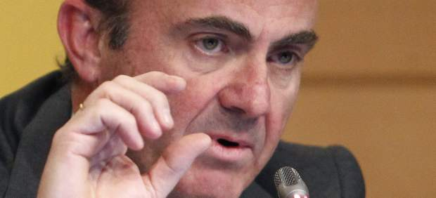

2012-03-01T12:14:22Z
El Tesoro coloca 4.500 millones, el máximo previsto, a tipos de interés reducidos
El Tesoro coloca 4.500 millones, el máximo previsto, a tipos de interés reducidos
EUROPA PRESS
La demanda ha superado los 11.400 millones de euros.
La prima de riesgo española se relaja hasta los 306 puntos.
El Tesoro Público ha vuelto a superar una prueba en los mercados animado por la inyección de más de medio billón de euros por parte del Banco Central Europeo (BCE) a la banca y ha colocado 4.501,44 millones de euros en bonos y a tipos más reducidos que en la anterior ocasión, según la información difundida por el Banco de España.De esta forma, el organismos se ha quedado en la parte alta del rango, ya que esperaba captar entre 3.500 y 4.500 millones. La demanda, por su parte, ha vuelto a ser alta y ha superado los 11.400 millones de euros.En concreto, el Tesoro ha colocado 1.909,97 millones en bonos del Estado con cupón del 4,00% y vencimiento a 30 de julio de 2015 de los 4.525,06 millones solicitados por los mercados. El tipo medio ha pasado del 3,332% anterior al 2,617% actual, mientras que el marginal se ha reducido hasta el 2,748% desde el 3,470%.El organismo también ha colocado 1.061,04 millones en bonos con cupón del 3,40% y vigencia hasta el 30 de abril de 2014 de los 2.986,04 millones pedidos por los inversores. En este caso, el tipo medio se ha moderado hasta el 2,069% desde el 3,589%, mientras que el marginal se ha quedado en el 2,213% desde el 3,633%.Finalmente, el Tesoro ha colocado 1.530,43 millones en bonos con cupón 4,25% y vencimiento a 31 de octubre de 2016 de los 3.964,43 millones que ha demandado el mercado. El tipo medio de este tipo de papel se ha reducido hasta el 3,376% desde el 3,455%, mientras que el marginal se ha situado en el 3,478% frente al 3,557% anterior.La emisión de bonos se ha celebrado solo un día después de que el BCE haya adjudicado la cifra récord de 529.531 millones de euros a tipo fijo en la segunda subasta de liquidez con vencimiento a tres años celebrada por la institución, que contó con la participación de 800 entidades.La subasta de liquidez del BCE ha vuelto a favorecer el resultado del Tesoro, tal y como ocurrió el pasado mes de diciembre, cuando la primera emisión del BCE supuso el inicio de una buena racha de emisiones para el organismo dependiente del Ministerio de Economía.Así, el Tesoro ha cerrado satisfactoriamente todas las emisiones de 2012, al colocar casi siempre el máximo previsto e incluso superar sus propios objetivos y, generalmente, a tipos más bajos que en las subastas anteriores.Estos resultados muestran que los mercados han recuperado cierta confianza en España y dan más importancia a las reformas que ha planteado el Gobierno de Mariano Rajoy que a las últimas rebajas de las agencias de 'rating'.Además, constatan que los inversores ya habían descontado las malas cifras de déficit, puesto que también ha sido la primera emisión desde que se conoce el dato definitivo, que superó las peores previsiones y se situó en el 8,51%, más de 2,5 puntos por encima de la estimación del anterior Gobierno (6%).En este contexto, la prima de riesgo ofrecida a los inversores por los bonos españoles a diez años respecto a los alemanes se relajaba hasta los 306 puntos básicos, con un rendimiento del 4,897%, tras la apertura de los mercados europeos.En cualquier caso, el Tesoro ha emitido ya más de 40.000 millones de euros en lo que va de año, lo que supone más del 46% de los 86.000 millones de euros brutos que espera colocar en deuda a medio y largo plazo a lo largo de 2012.A lo largo del mes de marzo, el organismo realizará tres subastas más: una de obligaciones el jueves 15 de marzo, otra de letras a 12 y 18 meses el martes 20 y otra de letras a 3 y 6 meses el martes 27 de marzo.En el mes de abril, el Tesoro se someterá al escrutinio del mercado en cuatro ocasiones. Así, celebrará una subasta de bonos el miércoles 4 de abril, una de letras el martes 17, una de obligaciones el jueves 19 y otra de letras el martes 24.
EUROPA PRESS
- La demanda ha superado los 11.400 millones de euros.
- La prima de riesgo española se relaja hasta los 306 puntos.
El Tesoro Público ha vuelto a superar una prueba en los mercados animado por la inyección de más de medio billón de euros por parte del Banco Central Europeo (BCE) a la banca y ha colocado 4.501,44 millones de euros en bonos y a tipos más reducidos que en la anterior ocasión, según la información difundida por el Banco de España.
De esta forma, el organismos se ha quedado en la parte alta del rango, ya que esperaba captar entre 3.500 y 4.500 millones. La demanda, por su parte, ha vuelto a ser alta y ha superado los 11.400 millones de euros.
En concreto, el Tesoro ha colocado 1.909,97 millones en bonos del Estado con cupón del 4,00% y vencimiento a 30 de julio de 2015 de los 4.525,06 millones solicitados por los mercados. El tipo medio ha pasado del 3,332% anterior al 2,617% actual, mientras que el marginal se ha reducido hasta el 2,748% desde el 3,470%.
El organismo también ha colocado 1.061,04 millones en bonos con cupón del 3,40% y vigencia hasta el 30 de abril de 2014 de los 2.986,04 millones pedidos por los inversores. En este caso, el tipo medio se ha moderado hasta el 2,069% desde el 3,589%, mientras que el marginal se ha quedado en el 2,213% desde el 3,633%.
Finalmente, el Tesoro ha colocado 1.530,43 millones en bonos con cupón 4,25% y vencimiento a 31 de octubre de 2016 de los 3.964,43 millones que ha demandado el mercado. El tipo medio de este tipo de papel se ha reducido hasta el 3,376% desde el 3,455%, mientras que el marginal se ha situado en el 3,478% frente al 3,557% anterior.
La emisión de bonos se ha celebrado solo un día después de que el BCE haya adjudicado la cifra récord de 529.531 millones de euros a tipo fijo en la segunda subasta de liquidez con vencimiento a tres años celebrada por la institución, que contó con la participación de 800 entidades.
La subasta de liquidez del BCE ha vuelto a favorecer el resultado del Tesoro, tal y como ocurrió el pasado mes de diciembre, cuando la primera emisión del BCE supuso el inicio de una buena racha de emisiones para el organismo dependiente del Ministerio de Economía.
Así, el Tesoro ha cerrado satisfactoriamente todas las emisiones de 2012, al colocar casi siempre el máximo previsto e incluso superar sus propios objetivos y, generalmente, a tipos más bajos que en las subastas anteriores.
Estos resultados muestran que los mercados han recuperado cierta confianza en España y dan más importancia a las reformas que ha planteado el Gobierno de Mariano Rajoy que a las últimas rebajas de las agencias de 'rating'.
Además, constatan que los inversores ya habían descontado las malas cifras de déficit, puesto que también ha sido la primera emisión desde que se conoce el dato definitivo, que superó las peores previsiones y se situó en el 8,51%, más de 2,5 puntos por encima de la estimación del anterior Gobierno (6%).
En este contexto, la prima de riesgo ofrecida a los inversores por los bonos españoles a diez años respecto a los alemanes se relajaba hasta los 306 puntos básicos, con un rendimiento del 4,897%, tras la apertura de los mercados europeos.
En cualquier caso, el Tesoro ha emitido ya más de 40.000 millones de euros en lo que va de año, lo que supone más del 46% de los 86.000 millones de euros brutos que espera colocar en deuda a medio y largo plazo a lo largo de 2012.
A lo largo del mes de marzo, el organismo realizará tres subastas más: una de obligaciones el jueves 15 de marzo, otra de letras a 12 y 18 meses el martes 20 y otra de letras a 3 y 6 meses el martes 27 de marzo.
En el mes de abril, el Tesoro se someterá al escrutinio del mercado en cuatro ocasiones. Así, celebrará una subasta de bonos el miércoles 4 de abril, una de letras el martes 17, una de obligaciones el jueves 19 y otra de letras el martes 24.

2012-03-01T11:52:35Z
Fallece una anciana intoxicada por humo al arder el sofá de su casa en el centro de Madrid
Fallece una anciana intoxicada por humo al arder el sofá de su casa en el centro de Madrid
EFE
El sofá ardió lentamente y la mujer, de 85 años, aspiró el humo de la combustión.
El fuego se autoextinguió y solo provocó daños en el salón.
Una sobrina y su cuidadora encontraron el cadáver.
Una mujer de 85 años fue encontrada muerta este jueves en su domicilio, en la calle de Sombrete, número 11, en el barrio de Lavapiés de Madrid. Los primeros indicios apuntan a que habría muerto a causa del humo que ha inhalado y que desprendía un sofá de su casa que se ha estado quemado lentamente durante toda la noche.Así lo explicaron fuentes de Emergencias de la Comunidad y de Emergencias Madrid, según las cuales hacia las 9,40 horas de este jueves una sobrina y la cuidadora de la víctima llamaron al 112 advirtiendo de que iban a entrar al domicilio porque olía a quemado.Al lugar acudieron efectivos del Summa y dos dotaciones de Bomberos que encontraron a la mujer en su dormitorio, en parada cardiorrespiratoria, ya fallecida, y sin posibilidad de reanimación, por lo que los médicos solo pudieron certificar su muerte.La presencia de los Bomberos solo fue precisa para ventilar el domicilio, ya que el fuego se había autoextinguido.Según fuentes de Emergencias Madrid, el origen del incendio puedo estar en un sofá del salón, que ardió lentamente provocando daños en el techo de la sala. La habitación se encontraba completamente cerrada. El resto de la vivienda no sufrió desperfectos.
EFE
- El sofá ardió lentamente y la mujer, de 85 años, aspiró el humo de la combustión.
- El fuego se autoextinguió y solo provocó daños en el salón.
- Una sobrina y su cuidadora encontraron el cadáver.
Una mujer de 85 años fue encontrada muerta este jueves en su domicilio, en la calle de Sombrete, número 11, en el barrio de Lavapiés de Madrid. Los primeros indicios apuntan a que habría muerto a causa del humo que ha inhalado y que desprendía un sofá de su casa que se ha estado quemado lentamente durante toda la noche.
Así lo explicaron fuentes de Emergencias de la Comunidad y de Emergencias Madrid, según las cuales hacia las 9,40 horas de este jueves una sobrina y la cuidadora de la víctima llamaron al 112 advirtiendo de que iban a entrar al domicilio porque olía a quemado.
Al lugar acudieron efectivos del Summa y dos dotaciones de Bomberos que encontraron a la mujer en su dormitorio, en parada cardiorrespiratoria, ya fallecida, y sin posibilidad de reanimación, por lo que los médicos solo pudieron certificar su muerte.
La presencia de los Bomberos solo fue precisa para ventilar el domicilio, ya que el fuego se había autoextinguido.
Según fuentes de Emergencias Madrid, el origen del incendio puedo estar en un sofá del salón, que ardió lentamente provocando daños en el techo de la sala. La habitación se encontraba completamente cerrada. El resto de la vivienda no sufrió desperfectos.
2012-03-01T11:32:14Z
El paro continúa su escalada y alcanza nuevos máximos en la UE
El paro continúa su escalada y alcanza nuevos máximos en la UE
EFE
La tasa de desempleo llegó al 10,7% en los países de la moneda única.
El número total de parados en la UE ascendió en enero a 24,3 millones.
España sigue siendo el farolillo rojo del paro en la UE con una tasa del 23,3%.
Los rostros del paro: cuatro historias del desempleo en España.
El paro continuó su escalada en enero en la zona del euro y en toda la UE, donde alcanzó los niveles más altos registrados desde octubre de 1997 y desde el año 2000, respectivamente, según los datos difundidos por Eurostat.La tasa de desempleo subió 0,1 punto en ambas zonas con respecto a diciembre y llegó al 10,7 % en los países de la moneda única y al 10,1 % en los Veintisiete.El paro se disparó en los Veintisiete a finales de 2008 coincidiendo con el estallido de la crisis financiera internacional, aunque a lo largo de 2010 el indicador ofreció signos de mejoría.No obstante, desde julio de 2011 la tasa de desempleo ha vuelto a crecer a un ritmo prácticamente estable de 0,1 puntos mensuales tanto en la zona del euro como en la UE.En España, el paro subió a un ritmo mayor en dicho período hasta situarse en enero en el 23,3%, la tasa más alta de los Veintisiete y más del doble de la media comunitaria.Los siguientes países de la UE con más paro fueron Grecia (19,9%, según datos de noviembre) e Irlanda y Portugal, ambos con el 14,8%, mientras que en el otro extremo se situaron Austria (4,0%), Holanda (5,0%) y Luxemburgo (5,1%).El número total de parados en la UE ascendió en enero a 24,3 millones, de los cuales 16,9 millones residen en los países de la moneda única, según las estimaciones de Eurostat.En comparación con diciembre, el número de desempleados aumentó en 191.000 personas en los Veintisiete y en 185.000 en la zona del euro.Letonia, donde más ha bajadoCon respecto a enero de 2011, el volumen de parados creció en 1,4 millones en toda la UE, la mayoría de ellos (1,2 millones) residentes en los países socios del euro.En ese mes, la tasa de desempleo fue del 10,1% en la zona del euro y del 9,5 % en los Veintisiete.Durante el último año, el paro bajó en diez Estados miembros, permaneció estable en dos y subió en quince.Las mayores caídas se registraron en Letonia (del 18,2 % al 14,7 % entre los terceros trimestres de 2010 y 2011), Lituania (del 17,5 % al 14,3 % entre los cuartos trimestres de 2010 y 2011) y Estonia (13,9 % al 11,7 % entre las mismas fechas).Los mayores aumentos se observaron en Grecia (del 14,1 % al 19,9 % entre noviembre de 2010 y de 2011), Chipre (del 6,3 % al 9,6 %) y España (del 20,6 % al 23,3 %).Masculino y femeninoEl desempleo masculino registró un aumento anual de 0,8 puntos en la zona del euro, hasta el 10,5 %, y de 0,7 puntos en la UE, hasta el 10,1 %. El paro femenino, por su parte, subió 0,6 puntos y alcanzó el 10,9 % en los socios del euro, y creció 0,5 puntos hasta el 10,1 % en los Veintisiete.Entre los menores de 25 años, el grupo de población más afectado por el paro, la tasa de desempleo alcanzó en enero el 21,6 % en la zona del euro y el 22,4 % en la UE.Esto significa que unos 5,5 millones de jóvenes estaban sin trabajo en toda la Unión (269.000 más que en enero de 2011), de ellos 3,3 millones en la zona del euro (141.000 más).España siguió encabezando la estadística de paro juvenil, con el 49,9 %, seguida de Grecia (48,1 % en noviembre de 2011) y Eslovaquia (36,0 %), mientras que las tasas más bajas se observaron en Alemania (7,8 %), Austria (8,9 %) y Holanda (9,0 %).El grave problema del desempleo, y en especial el juvenil, se trata en la cumbre social tripartita que celebran esta mañana en Bruselas los representantes del Ejecutivo comunitario, de los Veintisiete y de la patronal y sindicatos europeos.Además, los jefes de Estado y de Gobierno de la UE debatirán a partir de esta tarde cómo compaginar las medidas de ajuste con el crecimiento económico y el empleo
EFE
- La tasa de desempleo llegó al 10,7% en los países de la moneda única.
- El número total de parados en la UE ascendió en enero a 24,3 millones.
- España sigue siendo el farolillo rojo del paro en la UE con una tasa del 23,3%.
- Los rostros del paro: cuatro historias del desempleo en España.
El paro continuó su escalada en enero en la zona del euro y en toda la UE, donde alcanzó los niveles más altos registrados desde octubre de 1997 y desde el año 2000, respectivamente, según los datos difundidos por Eurostat.
La tasa de desempleo subió 0,1 punto en ambas zonas con respecto a diciembre y llegó al 10,7 % en los países de la moneda única y al 10,1 % en los Veintisiete.
El paro se disparó en los Veintisiete a finales de 2008 coincidiendo con el estallido de la crisis financiera internacional, aunque a lo largo de 2010 el indicador ofreció signos de mejoría.
No obstante, desde julio de 2011 la tasa de desempleo ha vuelto a crecer a un ritmo prácticamente estable de 0,1 puntos mensuales tanto en la zona del euro como en la UE.
En España, el paro subió a un ritmo mayor en dicho período hasta situarse en enero en el 23,3%, la tasa más alta de los Veintisiete y más del doble de la media comunitaria.
Los siguientes países de la UE con más paro fueron Grecia (19,9%, según datos de noviembre) e Irlanda y Portugal, ambos con el 14,8%, mientras que en el otro extremo se situaron Austria (4,0%), Holanda (5,0%) y Luxemburgo (5,1%).
El número total de parados en la UE ascendió en enero a 24,3 millones, de los cuales 16,9 millones residen en los países de la moneda única, según las estimaciones de Eurostat.
En comparación con diciembre, el número de desempleados aumentó en 191.000 personas en los Veintisiete y en 185.000 en la zona del euro.
Letonia, donde más ha bajado
Con respecto a enero de 2011, el volumen de parados creció en 1,4 millones en toda la UE, la mayoría de ellos (1,2 millones) residentes en los países socios del euro.
En ese mes, la tasa de desempleo fue del 10,1% en la zona del euro y del 9,5 % en los Veintisiete.
Durante el último año, el paro bajó en diez Estados miembros, permaneció estable en dos y subió en quince.
Las mayores caídas se registraron en Letonia (del 18,2 % al 14,7 % entre los terceros trimestres de 2010 y 2011), Lituania (del 17,5 % al 14,3 % entre los cuartos trimestres de 2010 y 2011) y Estonia (13,9 % al 11,7 % entre las mismas fechas).
Los mayores aumentos se observaron en Grecia (del 14,1 % al 19,9 % entre noviembre de 2010 y de 2011), Chipre (del 6,3 % al 9,6 %) y España (del 20,6 % al 23,3 %).
Masculino y femenino
El desempleo masculino registró un aumento anual de 0,8 puntos en la zona del euro, hasta el 10,5 %, y de 0,7 puntos en la UE, hasta el 10,1 %.
El paro femenino, por su parte, subió 0,6 puntos y alcanzó el 10,9 % en los socios del euro, y creció 0,5 puntos hasta el 10,1 % en los Veintisiete.
Entre los menores de 25 años, el grupo de población más afectado por el paro, la tasa de desempleo alcanzó en enero el 21,6 % en la zona del euro y el 22,4 % en la UE.
Esto significa que unos 5,5 millones de jóvenes estaban sin trabajo en toda la Unión (269.000 más que en enero de 2011), de ellos 3,3 millones en la zona del euro (141.000 más).
España siguió encabezando la estadística de paro juvenil, con el 49,9 %, seguida de Grecia (48,1 % en noviembre de 2011) y Eslovaquia (36,0 %), mientras que las tasas más bajas se observaron en Alemania (7,8 %), Austria (8,9 %) y Holanda (9,0 %).
El grave problema del desempleo, y en especial el juvenil, se trata en la cumbre social tripartita que celebran esta mañana en Bruselas los representantes del Ejecutivo comunitario, de los Veintisiete y de la patronal y sindicatos europeos.
Además, los jefes de Estado y de Gobierno de la UE debatirán a partir de esta tarde cómo compaginar las medidas de ajuste con el crecimiento económico y el empleo
2012-03-01T11:05:32Z
Gallardón aconseja desconvocar las manifestaciones del 11-M, por respeto a las víctimas
Gallardón aconseja desconvocar las manifestaciones del 11-M, por respeto a las víctimas
EUROPA PRESS
"Sería una insensibilidad muy difícil de comprender" hacia las víctimas de los atentados del 11-M, según Gallardón.
El ministro de Justicia se ha mostrado preocupado por la repercusión que puedan tener las imágenes de los disturbios del miércoles en Barcelona.
El ministro de Justicia, Alberto Ruiz-Gallardón, ha manifestado este jueves que espera que los sindicatos reconsideren desconvocar las manifestaciones contra la reforma laboral previstas para el próximo 11 de marzo porque sería una "insensibilidad muy difícil de comprender" hacia las víctimas del atentado terrorista que tuvo lugar ese mismo día en 2004."No es un día ni para confundir ni para hacer cosa distinta que no sea esa obligación de recordar a las víctimas del 11-M", ha asegurado en una entrevista en Onda Cero, en la que ha confesado que espera "que haya alguien dentro de las centrales sindicales con la suficiente sensibilidad como para someter a reconsideración la utilización de esta fecha".Asimismo, Gallardón se ha referido a los disturbios que el miércoles tuvieron lugar en Barcelona durante las manifestaciones de estudiantes, concretamente a los que se desarrollaron en las proximidades de la plaza de España, que esta semana acoge el evento más internacional de Barcelona, el Mobile World Congress (MWC), y ha criticado que esas imágenes de violencia son una "muy negativa contribución al progreso" de España."Esas imágenes de Barcelona, que estos días se ha convertido en la vanguardia, nos han hecho mucho daño y probablemente nos habrán costado muchos puestos de trabajo y muchas inversiones. Muchas decisiones pueden cuestionarse si las ven acompañadas de esas imágenes. El Gobierno hace una llamada a la responsabilidad", ha señalado, para aclarar, no obstante, que respeta el derecho de manifestación.En este sentido, ha advertido a los estudiantes que salieron a las calles a protestar contra los recortes en la educación pública que hay "grupos antisistema y violentos" que se están infiltrando en sus protestas y que "lo único que buscan es el desconcierto de la violencia por la violencia y utilizar esas marchas para hacer una perversión de su discurso y para causar un daño muy grande".
EUROPA PRESS
- "Sería una insensibilidad muy difícil de comprender" hacia las víctimas de los atentados del 11-M, según Gallardón.
- El ministro de Justicia se ha mostrado preocupado por la repercusión que puedan tener las imágenes de los disturbios del miércoles en Barcelona.
El ministro de Justicia, Alberto Ruiz-Gallardón, ha manifestado este jueves que espera que los sindicatos reconsideren desconvocar las manifestaciones contra la reforma laboral previstas para el próximo 11 de marzo porque sería una "insensibilidad muy difícil de comprender" hacia las víctimas del atentado terrorista que tuvo lugar ese mismo día en 2004.
"No es un día ni para confundir ni para hacer cosa distinta que no sea esa obligación de recordar a las víctimas del 11-M", ha asegurado en una entrevista en Onda Cero, en la que ha confesado que espera "que haya alguien dentro de las centrales sindicales con la suficiente sensibilidad como para someter a reconsideración la utilización de esta fecha".
Asimismo, Gallardón se ha referido a los disturbios que el miércoles tuvieron lugar en Barcelona durante las manifestaciones de estudiantes, concretamente a los que se desarrollaron en las proximidades de la plaza de España, que esta semana acoge el evento más internacional de Barcelona, el Mobile World Congress (MWC), y ha criticado que esas imágenes de violencia son una "muy negativa contribución al progreso" de España.
"Esas imágenes de Barcelona, que estos días se ha convertido en la vanguardia, nos han hecho mucho daño y probablemente nos habrán costado muchos puestos de trabajo y muchas inversiones. Muchas decisiones pueden cuestionarse si las ven acompañadas de esas imágenes. El Gobierno hace una llamada a la responsabilidad", ha señalado, para aclarar, no obstante, que respeta el derecho de manifestación.
En este sentido, ha advertido a los estudiantes que salieron a las calles a protestar contra los recortes en la educación pública que hay "grupos antisistema y violentos" que se están infiltrando en sus protestas y que "lo único que buscan es el desconcierto de la violencia por la violencia y utilizar esas marchas para hacer una perversión de su discurso y para causar un daño muy grande".
2012-03-01T10:33:44Z
Primer día de la ley Sinde-Wert y primeras denuncias contra más de 200 páginas web
Primer día de la ley Sinde-Wert y primeras denuncias contra más de 200 páginas web
20MINUTOS.ES / AGENCIAS
A partir del 1 de marzo ya se pueden presentar denuncias contra webs de enlaces ante la Comisión de Propiedad Intelectual.
El músico y miembro de la SGAE Eme Navarro, contrario a la ley Sinde, ha sido el primero en presentarse en el registro del Ministerio de Cultura.
Ha llevado denuncias contra más de 200 webs que se han autoinculpado como parte de una protesta que pretende demostrar la ineficacia de la ley Sinde-Wert.
Cronología de la ley Sinde-Wert
Los autores que consideren que un sitio web utiliza sus obras sin permiso y con ánimo de lucro pueden presentar una denuncia, a partir de este jueves, ante la Comisión de Propiedad Intelectual, y conseguir, incluso, que se interrumpa el servicio de esa página durante un año. Hoy entra en vigor el reglamento de la ley Sinde, es decir, la normativa que crea una sección segunda dentro de la Comisión de Propiedad Intelectual, encargada de gestionar un sistema mixto administrativo-judicial contra las páginas que vulneren la propiedad intelectual con ánimo de lucro o que causen o puedan causar un daño al patrimonio.Se trata de una nueva etapa en la lucha contra la piratería en Internet, que ha sido aplaudida por los autores, pero criticada por los internautas, que han llegado a recurrir al Tribunal Supremo este reglamento. Desde el 1 de marzo, cuando un titular de derechos de propiedad intelectual considere que un sitio de Internet utiliza sus obras sin permiso puede acudir a la Comisión para pedir que se inicie un procedimiento, que se prolongará entre 20 días y tres meses. Los autores pueden denunciar también a sitios de enlaces, que ya no podrán alegar desconocimiento de los hechos presuntamente ilícitos que comentan las páginas con las que conectan. En este proceso, los jueces intervienen en dos momentos: uno, si el denunciante no puede identificar al responsable de la presunta infracción, y dos, para autorizar la retirada de contenidos ilícitos o la interrupción de la prestación del servicio.En este primer día ya se ha producido la primera demanda contra páginas web de enlaces. El denunciante es el músico y miembro de la SGAE Eme Navarro, que ha acudido al registro del Ministerio de Cultura para comunicar la actividad supuestamente ilegítima de más de 200 páginas web. Las denuncias forman en realidad parte de una campaña de desobediencia promovida por el grupo Hacktivistas para protestar contra la ley Sinde-Wert. La iniciaitiva, a la que se ha sumado Navarro debido a su posición contraria a dicha ley, pretende poner a prueba el reglamento y demostrar la ineficacia del mismo.La propuesta del colectivo era que cualquiera que quisiese protestar contra la polémica ley enlazase la obra de Eme Navarro en su blog o la usase sin su permiso y posteriormente accediese "a ser denunciado por el creador ante la Comisión del Ministerio de Cultura encargada sin proceso judicial de tramitar las denuncias de la ley Sinde-Wert". Más de doscientos sitios web han apoyado la iniciativa.Por su parte, Navarro no ha dudado en realizar las correspondientes denuncias y, tal y como cuenta el grupo Hacktivistas desde su página web, ha sido el primero en presentarse en el registro.
20MINUTOS.ES / AGENCIAS
- A partir del 1 de marzo ya se pueden presentar denuncias contra webs de enlaces ante la Comisión de Propiedad Intelectual.
- El músico y miembro de la SGAE Eme Navarro, contrario a la ley Sinde, ha sido el primero en presentarse en el registro del Ministerio de Cultura.
- Ha llevado denuncias contra más de 200 webs que se han autoinculpado como parte de una protesta que pretende demostrar la ineficacia de la ley Sinde-Wert.
- Cronología de la ley Sinde-Wert
Los autores que consideren que un sitio web utiliza sus obras sin permiso y con ánimo de lucro pueden presentar una denuncia, a partir de este jueves, ante la Comisión de Propiedad Intelectual, y conseguir, incluso, que se interrumpa el servicio de esa página durante un año.
Hoy entra en vigor el reglamento de la ley Sinde, es decir, la normativa que crea una sección segunda dentro de la Comisión de Propiedad Intelectual, encargada de gestionar un sistema mixto administrativo-judicial contra las páginas que vulneren la propiedad intelectual con ánimo de lucro o que causen o puedan causar un daño al patrimonio.
Se trata de una nueva etapa en la lucha contra la piratería en Internet, que ha sido aplaudida por los autores, pero criticada por los internautas, que han llegado a recurrir al Tribunal Supremo este reglamento. Desde el 1 de marzo, cuando un titular de derechos de propiedad intelectual considere que un sitio de Internet utiliza sus obras sin permiso puede acudir a la Comisión para pedir que se inicie un procedimiento, que se prolongará entre 20 días y tres meses.
Los autores pueden denunciar también a sitios de enlaces, que ya no podrán alegar desconocimiento de los hechos presuntamente ilícitos que comentan las páginas con las que conectan. En este proceso, los jueces intervienen en dos momentos: uno, si el denunciante no puede identificar al responsable de la presunta infracción, y dos, para autorizar la retirada de contenidos ilícitos o la interrupción de la prestación del servicio.
En este primer día ya se ha producido la primera demanda contra páginas web de enlaces. El denunciante es el músico y miembro de la SGAE Eme Navarro, que ha acudido al registro del Ministerio de Cultura para comunicar la actividad supuestamente ilegítima de más de 200 páginas web. Las denuncias forman en realidad parte de una campaña de desobediencia promovida por el grupo Hacktivistas para protestar contra la ley Sinde-Wert. La iniciaitiva, a la que se ha sumado Navarro debido a su posición contraria a dicha ley, pretende poner a prueba el reglamento y demostrar la ineficacia del mismo.
La propuesta del colectivo era que cualquiera que quisiese protestar contra la polémica ley enlazase la obra de Eme Navarro en su blog o la usase sin su permiso y posteriormente accediese "a ser denunciado por el creador ante la Comisión del Ministerio de Cultura encargada sin proceso judicial de tramitar las denuncias de la ley Sinde-Wert". Más de doscientos sitios web han apoyado la iniciativa.
Por su parte, Navarro no ha dudado en realizar las correspondientes denuncias y, tal y como cuenta el grupo Hacktivistas desde su página web, ha sido el primero en presentarse en el registro.
2012-03-01T10:23:56Z
Las matriculaciones de turismos descienden en febrero un 2,1%
Las matriculaciones de turismos descienden en febrero un 2,1%
EFE
El año pasado febrero ya retrocedió un 27,6%.
El bimestre (enero-febrero de 2012) cierra con 119.695 matriculaciones.
Las matriculaciones de turismos en febrero alcanzaron las 64.732 unidades, un 2,1% menos que las 66.121 contabilizadas en el mismo mes de 2011, han informado las asociaciones automovilísticas de fabricantes (Anfac) y de vendedores (Ganvam).El recién terminado febrero incide en el mal comportamiento del mercado automovilístico, pues la comparativa interanual se hace sobre un mes (febrero de 2011) que ya el año pasado retrocedió un 27,6% y se saldó con un muy bajo volumen de matriculaciones.El primer bimestre (enero-febrero de 2012) cierra con 119.695 matriculaciones, cifra prácticamente similar (-0,1%) al mismo periodo del pasado año, cuando se matricularon 119.755 unidades.
EFE
- El año pasado febrero ya retrocedió un 27,6%.
- El bimestre (enero-febrero de 2012) cierra con 119.695 matriculaciones.
Las matriculaciones de turismos en febrero alcanzaron las 64.732 unidades, un 2,1% menos que las 66.121 contabilizadas en el mismo mes de 2011, han informado las asociaciones automovilísticas de fabricantes (Anfac) y de vendedores (Ganvam).
El recién terminado febrero incide en el mal comportamiento del mercado automovilístico, pues la comparativa interanual se hace sobre un mes (febrero de 2011) que ya el año pasado retrocedió un 27,6% y se saldó con un muy bajo volumen de matriculaciones.
El primer bimestre (enero-febrero de 2012) cierra con 119.695 matriculaciones, cifra prácticamente similar (-0,1%) al mismo periodo del pasado año, cuando se matricularon 119.755 unidades.
2012-03-01T10:10:40Z
El fundador de Megaupload concede su primera entrevista: "Ellos no pueden ganar"
El fundador de Megaupload concede su primera entrevista: "Ellos no pueden ganar"
EFE
Kim Schmitz -alias 'Dotcom'- asegura tras haber obtenido la libertad condicional que Estados Unidos tiene evidencias que prueban su inocencia.
Está a la espera del inicio del proceso de extradición que pidió EEUU.
"Por cada correo electrónico que se incluye en la acusación, yo tengo otros cien para refutarlo", explicó a un diario de Nueva Zelanda.
El fundador de Megaupload, Kim Schmitz -alias Dotcom- aseguró en su primera entrevista tras haber obtenido la libertad condicional que Estados Unidos tiene evidencias que prueban su inocencia. Dotcom está a la espera del inicio en agosto del proceso de extradición que pidió EEUU tras su detención en enero pasado junto a otros tres ejecutivos de Megaupload en su mansión a las afueras de Auckland, en un operativo internacional que incluyó el cierre de su portal y detenciones en Europa. Los cargos levantados por el departamento de Justicia de Estados Unidos para dar inicio al operativo contra su portal, explicó, representan solamente una pequeña fracción de la situación. "Por cada correo electrónico que se incluye en la acusación, yo tengo otros cien para refutarlo", dijo al diario New Zealand Herald.El informático alemán también acusó a las autoridades estadounidenses de presentar solamente un lado de la moneda. "¿Cómo se eligen (las evidencias) de tal manera que son tan engañosos y tan maliciosos?", se preguntó Dotcom, y recordó que mientras estuvo detenido se decía a sí mismo: "Ellos no pueden ganar".Prisión preventivaDotcom, que tiene permiso de residencia en Nueva Zelanda, afirmó que existen evidencias claras que demuestran que él y su equipo de expertos han buscado detener las violaciones a los derechos de autor. El informático alemán acusó a Estados Unidos de forzar un operativo para capturarlo en Nueva Zelanda cuando sabían que él y su esposa habían previsto un viaje a ese país "unos seis meses después de que los mellizos hayan nacido". Dotcom relató su experiencia en la prisión preventiva, donde pasó alrededor de un mes, sus dolores de espalda por un problema en la columna y las privaciones de sueño y reafirmó su deseo de vivir en Nueva Zelanda. "Este es el país en el que quiero vivir y donde quiero que mis hijos crezcan. Me encanta", acotó Dotcom, a quien ayer el Alto Tribunal neozelandés le confirmó su libertad condicional y le informó de que liberará una importante suma de dinero para sus gastos personales y el pago de acreedores.
EFE
- Kim Schmitz -alias 'Dotcom'- asegura tras haber obtenido la libertad condicional que Estados Unidos tiene evidencias que prueban su inocencia.
- Está a la espera del inicio del proceso de extradición que pidió EEUU.
- "Por cada correo electrónico que se incluye en la acusación, yo tengo otros cien para refutarlo", explicó a un diario de Nueva Zelanda.
El fundador de Megaupload, Kim Schmitz -alias Dotcom- aseguró en su primera entrevista tras haber obtenido la libertad condicional que Estados Unidos tiene evidencias que prueban su inocencia.
Dotcom está a la espera del inicio en agosto del proceso de extradición que pidió EEUU tras su detención en enero pasado junto a otros tres ejecutivos de Megaupload en su mansión a las afueras de Auckland, en un operativo internacional que incluyó el cierre de su portal y detenciones en Europa.
Los cargos levantados por el departamento de Justicia de Estados Unidos para dar inicio al operativo contra su portal, explicó, representan solamente una pequeña fracción de la situación. "Por cada correo electrónico que se incluye en la acusación, yo tengo otros cien para refutarlo", dijo al diario New Zealand Herald.
El informático alemán también acusó a las autoridades estadounidenses de presentar solamente un lado de la moneda. "¿Cómo se eligen (las evidencias) de tal manera que son tan engañosos y tan maliciosos?", se preguntó Dotcom, y recordó que mientras estuvo detenido se decía a sí mismo: "Ellos no pueden ganar".
Prisión preventiva
Dotcom, que tiene permiso de residencia en Nueva Zelanda, afirmó que existen evidencias claras que demuestran que él y su equipo de expertos han buscado detener las violaciones a los derechos de autor.
El informático alemán acusó a Estados Unidos de forzar un operativo para capturarlo en Nueva Zelanda cuando sabían que él y su esposa habían previsto un viaje a ese país "unos seis meses después de que los mellizos hayan nacido".
Dotcom relató su experiencia en la prisión preventiva, donde pasó alrededor de un mes, sus dolores de espalda por un problema en la columna y las privaciones de sueño y reafirmó su deseo de vivir en Nueva Zelanda.
"Este es el país en el que quiero vivir y donde quiero que mis hijos crezcan. Me encanta", acotó Dotcom, a quien ayer el Alto Tribunal neozelandés le confirmó su libertad condicional y le informó de que liberará una importante suma de dinero para sus gastos personales y el pago de acreedores.
2012-03-01T10:01:25Z
El Gobierno indemnizará a Arnaldo Otegi con 20.000 euros por daños morales
El Gobierno indemnizará a Arnaldo Otegi con 20.000 euros por daños morales
EFE
Por una condena "desproporcionada" por injurias graves al rey.
Justicia ha dado la orden de pago a la Caja de Depósitos del Tesoro.
Otegi dijo que el rey "es el responsable de los torturadores".
Gallardón dice que "discrepa" pero que "acata" la sentencia.
El Gobierno pagará 20.000 euros a Arnaldo Otegi por daños morales para evitar una sanción del Tribunal Europeo de Derechos Humanos (TEDH), que en marzo del año pasado condenó a España a indemnizar al exportavoz de Batasuna por haberle impuesto una condena "desproporcionada" por injurias graves al rey en 2003.El Ministerio de Justicia ha dado la orden de pago a la Caja General de Depósitos del Tesoro y se hará efectiva en las próximas horas, han informado fuentes del Departamento que dirige Alberto Ruiz-Gallardón.El TEDH condenó a España a indemnizar con 20.000 euros a Otegi y pagar otros 3.000 euros en concepto de costas en una sentencia del 15 de marzo de 2011 por haberle impuesto una condena "desproporcionada", un año de cárcel, por un delito de injurias graves al rey en 2003.La sentencia se convirtió en firme el 19 de septiembre de 2011, al rechazar el Tribunal Europeo de Derechos Humanos el recurso presentado por el Gobierno español para que la Gran Sala de la Corte revisara la primera resolución.Gallardón, discrepa pero acataSegún el TEDH, "una pena de prisión impuesta por una infracción cometida en el terreno del discurso político no es compatible con la libertad de expresión garantizada por el artículo 10 del Convenio Europeo de Derechos Humanos". Para el Tribunal de Estrasburgo, "en el contexto de un debate sobre una cuestión con un interés público legítimo, nada puede justificar la imposición de tal pena de prisión".El 26 de febrero de 2003, Otegi dijo que el rey "es el jefe supremo del Ejército español, es decir el responsable de los torturadores y quien protege la tortura e impone su régimen monárquico a nuestro pueblo gracias a la tortura y la violencia".En declaraciones a Onda Cero, el ministro de Justicia, Alberto Ruiz-Gallardón, ha expresado su "discrepancia" con la sentencia, pero también su "acatamiento", "con disgusto", dado que el Tribunal Europeo de Derechos Humanos, de acuerdo con los convenios firmados por España, tiene jurisdicción sobre asuntos ocurridos en nuestro país.
EFE
- Por una condena "desproporcionada" por injurias graves al rey.
- Justicia ha dado la orden de pago a la Caja de Depósitos del Tesoro.
- Otegi dijo que el rey "es el responsable de los torturadores".
- Gallardón dice que "discrepa" pero que "acata" la sentencia.
El Gobierno pagará 20.000 euros a Arnaldo Otegi por daños morales para evitar una sanción del Tribunal Europeo de Derechos Humanos (TEDH), que en marzo del año pasado condenó a España a indemnizar al exportavoz de Batasuna por haberle impuesto una condena "desproporcionada" por injurias graves al rey en 2003.
El Ministerio de Justicia ha dado la orden de pago a la Caja General de Depósitos del Tesoro y se hará efectiva en las próximas horas, han informado fuentes del Departamento que dirige Alberto Ruiz-Gallardón.
El TEDH condenó a España a indemnizar con 20.000 euros a Otegi y pagar otros 3.000 euros en concepto de costas en una sentencia del 15 de marzo de 2011 por haberle impuesto una condena "desproporcionada", un año de cárcel, por un delito de injurias graves al rey en 2003.
La sentencia se convirtió en firme el 19 de septiembre de 2011, al rechazar el Tribunal Europeo de Derechos Humanos el recurso presentado por el Gobierno español para que la Gran Sala de la Corte revisara la primera resolución.
Gallardón, discrepa pero acata
Según el TEDH, "una pena de prisión impuesta por una infracción cometida en el terreno del discurso político no es compatible con la libertad de expresión garantizada por el artículo 10 del Convenio Europeo de Derechos Humanos".
Para el Tribunal de Estrasburgo, "en el contexto de un debate sobre una cuestión con un interés público legítimo, nada puede justificar la imposición de tal pena de prisión".
El 26 de febrero de 2003, Otegi dijo que el rey "es el jefe supremo del Ejército español, es decir el responsable de los torturadores y quien protege la tortura e impone su régimen monárquico a nuestro pueblo gracias a la tortura y la violencia".
En declaraciones a Onda Cero, el ministro de Justicia, Alberto Ruiz-Gallardón, ha expresado su "discrepancia" con la sentencia, pero también su "acatamiento", "con disgusto", dado que el Tribunal Europeo de Derechos Humanos, de acuerdo con los convenios firmados por España, tiene jurisdicción sobre asuntos ocurridos en nuestro país.
2012-03-01T09:17:16Z
Grupos de estudiantes mantienen las protestas contra los recortes en las principales universidades
Grupos de estudiantes mantienen las protestas contra los recortes en las principales universidades
EFE
Estudiantes cortan diez minutos la autopista AP-7 y la B-30 de Barcelona
Más de 300 alumnos duermen en el rectorado para preparar las protestas.
Concentraciones en Madrid en apoyo a los detenidos de Barcelona.
Grupos de estudiantes universitarios mantienen las protestas en contra de los recortes en las principales universidades de Barcelona y, mientras continúa el bloqueo de los accesos a la UAB, varios centenares han dormido en facultades y rectorados con la intención de volver a manifestarse. Un grupo de unos 80 estudiantes han cortado hacia las 8:10 horas de esta mañana la autopista AP-7 y la B-30 durante diez minutos en los dos sentidos de la marcha a la altura del campus de Bellaterra, lo que ha provocado fuertes retenciones en ambas vías.María García, portavoz de los estudiantes, ha señalado que su objetivo es "bloquear durante todo el día de hoy el campus para que no se pueda acceder a él, y por eso hemos montado barricadas en todas las rotondas de acceso a la Universitat Autónoma de Barcelona".Estas barricadas están formadas por contenedores, vallas y otros objetos que han sido colocados en las vías de acceso al campus universitario, lo que esta mañana impedía que profesores, personal administrativo y estudiantes que desean hoy volver a las clases pudieran llegar a sus destinos.Solidaridad con los detenidosEn la UAB han dormido en diferentes facultades unos 200 estudiantes, mientras cerca de 300 han pernoctado en el rectorado de la Universitat de Barcelona, en el edificio histórico de la plaza Universitat, donde esta mañana han celebrado una asamblea para decidir las acciones que organizarán.Una de las propuestas que han valorado es la de volver a marchar esta mañana hacia la plaza España de Barcelona, para manifestarse ante el recinto que alberga el Congreso Mundial de Móviles. También se mantienen las protestas en el campus del Raval de la UB, la Universitat Pompeu Fabra y la Universitat Rovira i Virgili de Tarragona, entre otros centros.Durante las protestas de ayer doce personas fueron detenidas, entre ellas dos menores de edad, y otras doce resultaron heridas leves durante la manifestación que se celebró en Barcelona contra los recortes en la Universidad.Estudiantes universitarios de Madrid celebrarán una pequeña concentración en la Ciudad Universitaria en solidaridad con los doce detenidos y, para el 29 de marzo, llevarán a cabo una jornada estatal de protesta.
EFE
- Estudiantes cortan diez minutos la autopista AP-7 y la B-30 de Barcelona
- Más de 300 alumnos duermen en el rectorado para preparar las protestas.
- Concentraciones en Madrid en apoyo a los detenidos de Barcelona.
Grupos de estudiantes universitarios mantienen las protestas en contra de los recortes en las principales universidades de Barcelona y, mientras continúa el bloqueo de los accesos a la UAB, varios centenares han dormido en facultades y rectorados con la intención de volver a manifestarse.
Un grupo de unos 80 estudiantes han cortado hacia las 8:10 horas de esta mañana la autopista AP-7 y la B-30 durante diez minutos en los dos sentidos de la marcha a la altura del campus de Bellaterra, lo que ha provocado fuertes retenciones en ambas vías.
María García, portavoz de los estudiantes, ha señalado que su objetivo es "bloquear durante todo el día de hoy el campus para que no se pueda acceder a él, y por eso hemos montado barricadas en todas las rotondas de acceso a la Universitat Autónoma de Barcelona".
Estas barricadas están formadas por contenedores, vallas y otros objetos que han sido colocados en las vías de acceso al campus universitario, lo que esta mañana impedía que profesores, personal administrativo y estudiantes que desean hoy volver a las clases pudieran llegar a sus destinos.
Solidaridad con los detenidos
En la UAB han dormido en diferentes facultades unos 200 estudiantes, mientras cerca de 300 han pernoctado en el rectorado de la Universitat de Barcelona, en el edificio histórico de la plaza Universitat, donde esta mañana han celebrado una asamblea para decidir las acciones que organizarán.
Una de las propuestas que han valorado es la de volver a marchar esta mañana hacia la plaza España de Barcelona, para manifestarse ante el recinto que alberga el Congreso Mundial de Móviles. También se mantienen las protestas en el campus del Raval de la UB, la Universitat Pompeu Fabra y la Universitat Rovira i Virgili de Tarragona, entre otros centros.
Durante las protestas de ayer doce personas fueron detenidas, entre ellas dos menores de edad, y otras doce resultaron heridas leves durante la manifestación que se celebró en Barcelona contra los recortes en la Universidad.
Estudiantes universitarios de Madrid celebrarán una pequeña concentración en la Ciudad Universitaria en solidaridad con los doce detenidos y, para el 29 de marzo, llevarán a cabo una jornada estatal de protesta.
2012-03-01T09:07:34Z
Stoner retoma la actividad y vuelve a marcar el ritmo en Sepang con Lorenzo segundo
Stoner retoma la actividad y vuelve a marcar el ritmo en Sepang con Lorenzo segundo
EFE
Un problema el miércoles en el motor de la moto de Dani Pedrosa hizo que los ingenieros de Honda bloqueasen todas las motos presentes en Sepang.
Stoner y Lorenzo parecen ser los pilotos más en forma de la pretemporada.
El australiano Casey Stoner (Honda RC 213 V) volvió a la actividad tras el parón obligado por el fabricante de su moto y volvió a marcar el ritmo para todos sus rivales en los entrenamientos que la Asociación de Equipos de competición convocó en el circuito malayo de Sepang.Un problema el miércoles en el motor de la moto de Dani Pedrosa hizo que los ingenieros de Honda bloqueasen todas las motos presentes en Sepang, por lo que en la segunda jornada los pilotos del fabricante japonés tuvieron descanso forzoso, que hoy quedó en el olvido y devolvió casi todos los aspectos deportivos a la normalidad.Así fue como Stoner logró marcar el mejor tiempo en pista a las pocas vueltas de comenzar a rodar, ya que en el sexto giro bajó de 2:01, fue el primero en hacerlo, y aún lo hizo en alguna ocasión más para colocarse al frente de la tabla con algo más de cuatro décimas de segundo de adelanto respecto a su inmediato perseguidor, el español Jorge Lorenzo (Yamaha YZR M 1).Los dos últimos campeones del mundo de MotoGP, el de 2010, el español Jorge Lorenzo, y el de 2011, el australiano Casey Stoner, parecen ser los pilotos más en forma de estos entrenamientos de pretemporada y eso que el español sufrió durante la jornada una caída sin consecuencias.La tercera plaza de la jornada fue para el también español Dani Pedrosa, quien colocó su nueva Honda RC 213 V de 1.000 c.c. a algo menos de seis décimas y media de segundo de su compañero de escudería Casey Stoner.La primera sorpresa llegó en la cuarta plaza, que ocupó el italiano Andrea Dovizioso sobre una de las Yamaha YZR M 1 de la escudería satélite Monster Yech 3 del francés Hervé Poncharal y, con ello, por delante del piloto oficial del fabricante nipón, el estadounidense Ben Spies.Spies fue ayer el autor del mejor tiempo de entrenamientos y hoy se quedó a poco más de una décima de segundo del transalpino y a casi un segundo de Stoner después de sufrir una caída sin consecuencias por la mañana.Rossi, a lo suyoEl italiano Valentino Rossi continúa todavía con su trabajo de puesta a punto de la novísima Ducati Desmosedici GP12, que podría seguir recibiendo nuevas piezas incluso en los grandes premios de Catar y España, en Losail y Jerez, respectivamente.Rossi logró un mejor tiempo de 2:01.550, a poco más de un segundo de Stoner pero seis décimas de segundo más rápido que el registro que lograse ayer, pero su trabajo continúa centrado en conocer toda la nueva electrónica de la moto además de realizar los pertinentes ajustes en el nuevo chasis para conseguir la máxima estabilidad en curva y también tracción para lograr una mejor aceleración.Rossi fue el primero de los pilotos de Ducati, secundado a milésimas de segundo por su propio compañero de equipo, el estadounidense Nicky Hayden y con el español Héctor Barberá como el tercero en discordia del fabricante italiano, al obtener el noveno mejor tiempo, justo por delante del también español Álvaro Bautista sobre la Honda RC 213 V.Las Claiming Rules Team (CRT) del español Ivan Silva y el colombiano Yonny Hernández, las BQR con chasis FTR y motor Kawasaki, continúan todavía lejos de los mejores tiempos, en ambos casos a más de seis segundos del registro de Casey Stoner.Clasificación oficial de los entrenamientos de Sepang:.1. Casey Stoner (AUS/Honda RC 213 V) 2:00.473.2. Jorge Lorenzo (ESP/Yamaha YZR M 1) 2:00.877.3. Dani Pedrosa (ESP/Honda RC 213 V) 2:01.115.4. Andrea Dovizioso (ITA/Yamaha YZR M 1) 2:01.315.5. Ben Spies (USA/Yamaha YZR M 1) 2:01.432.6. Cal Crutchlow (GBR/Yamaha YZR M 1) 2:01.454.7. Valentino Rossi (ITA/Ducati Desmosedici GP12) 2:01.550.8. Nicky Hayden (USA/Ducati Desmosedici) 2:01.609.9. Héctor Barberá (ESP/Ducati Desmosedici) 2:01.62310. Álvaro Bautista (ESP/Honda RC 213 V) 2:01.640
EFE
- Un problema el miércoles en el motor de la moto de Dani Pedrosa hizo que los ingenieros de Honda bloqueasen todas las motos presentes en Sepang.
- Stoner y Lorenzo parecen ser los pilotos más en forma de la pretemporada.
El australiano Casey Stoner (Honda RC 213 V) volvió a la actividad tras el parón obligado por el fabricante de su moto y volvió a marcar el ritmo para todos sus rivales en los entrenamientos que la Asociación de Equipos de competición convocó en el circuito malayo de Sepang.
Un problema el miércoles en el motor de la moto de Dani Pedrosa hizo que los ingenieros de Honda bloqueasen todas las motos presentes en Sepang, por lo que en la segunda jornada los pilotos del fabricante japonés tuvieron descanso forzoso, que hoy quedó en el olvido y devolvió casi todos los aspectos deportivos a la normalidad.
Así fue como Stoner logró marcar el mejor tiempo en pista a las pocas vueltas de comenzar a rodar, ya que en el sexto giro bajó de 2:01, fue el primero en hacerlo, y aún lo hizo en alguna ocasión más para colocarse al frente de la tabla con algo más de cuatro décimas de segundo de adelanto respecto a su inmediato perseguidor, el español Jorge Lorenzo (Yamaha YZR M 1).
Los dos últimos campeones del mundo de MotoGP, el de 2010, el español Jorge Lorenzo, y el de 2011, el australiano Casey Stoner, parecen ser los pilotos más en forma de estos entrenamientos de pretemporada y eso que el español sufrió durante la jornada una caída sin consecuencias.
La tercera plaza de la jornada fue para el también español Dani Pedrosa, quien colocó su nueva Honda RC 213 V de 1.000 c.c. a algo menos de seis décimas y media de segundo de su compañero de escudería Casey Stoner.
La primera sorpresa llegó en la cuarta plaza, que ocupó el italiano Andrea Dovizioso sobre una de las Yamaha YZR M 1 de la escudería satélite Monster Yech 3 del francés Hervé Poncharal y, con ello, por delante del piloto oficial del fabricante nipón, el estadounidense Ben Spies.
Spies fue ayer el autor del mejor tiempo de entrenamientos y hoy se quedó a poco más de una décima de segundo del transalpino y a casi un segundo de Stoner después de sufrir una caída sin consecuencias por la mañana.
Rossi, a lo suyo
El italiano Valentino Rossi continúa todavía con su trabajo de puesta a punto de la novísima Ducati Desmosedici GP12, que podría seguir recibiendo nuevas piezas incluso en los grandes premios de Catar y España, en Losail y Jerez, respectivamente.
Rossi logró un mejor tiempo de 2:01.550, a poco más de un segundo de Stoner pero seis décimas de segundo más rápido que el registro que lograse ayer, pero su trabajo continúa centrado en conocer toda la nueva electrónica de la moto además de realizar los pertinentes ajustes en el nuevo chasis para conseguir la máxima estabilidad en curva y también tracción para lograr una mejor aceleración.
Rossi fue el primero de los pilotos de Ducati, secundado a milésimas de segundo por su propio compañero de equipo, el estadounidense Nicky Hayden y con el español Héctor Barberá como el tercero en discordia del fabricante italiano, al obtener el noveno mejor tiempo, justo por delante del también español Álvaro Bautista sobre la Honda RC 213 V.
Las Claiming Rules Team (CRT) del español Ivan Silva y el colombiano Yonny Hernández, las BQR con chasis FTR y motor Kawasaki, continúan todavía lejos de los mejores tiempos, en ambos casos a más de seis segundos del registro de Casey Stoner.
Clasificación oficial de los entrenamientos de Sepang:
.1. Casey Stoner (AUS/Honda RC 213 V) 2:00.473
.2. Jorge Lorenzo (ESP/Yamaha YZR M 1) 2:00.877
.3. Dani Pedrosa (ESP/Honda RC 213 V) 2:01.115
.4. Andrea Dovizioso (ITA/Yamaha YZR M 1) 2:01.315
.5. Ben Spies (USA/Yamaha YZR M 1) 2:01.432
.6. Cal Crutchlow (GBR/Yamaha YZR M 1) 2:01.454
.7. Valentino Rossi (ITA/Ducati Desmosedici GP12) 2:01.550
.8. Nicky Hayden (USA/Ducati Desmosedici) 2:01.609
.9. Héctor Barberá (ESP/Ducati Desmosedici) 2:01.623
10. Álvaro Bautista (ESP/Honda RC 213 V) 2:01.640
2012-03-01T08:29:04Z
Leo Messi vuelve a sonreír con Argentina gracias a su primer 'hat-trick': "3 goles especiales"
Leo Messi vuelve a sonreír con Argentina gracias a su primer 'hat-trick': "3 goles especiales"
EFE
El argentino solo había conseguido 19 goles en 67 partidos con la albiceleste.
Un registro escaso en comparación con su fertilidad goleadora con el Barça.
"Hacía mucho tiempo que tenía partidos en los que no llegaban los goles, pero yo sabía que iban a llegar. Me voy muy contento", dice el delantero.
Lionel Messi se mostró hoy contento por los tres goles que marcó en el triunfo (3-1) de Argentina sobre Suiza en Berna, en un partido amistoso que quedará para la historia como el de su primer "hat trick" con la selección nacional. Era el partido número 68 de Messi con la albiceleste y hasta anoche sólo había marcado 19 goles, un registro escaso en comparación con su fertilidad goleadora con el Barcelona, donde ha anotado una docena de "tripletes" y está cerca de convertirse, con 24 años, en el máximo goleador de la historia del club catalán. Ese rendimiento le ha convertido durante mucho tiempo en Argentina en "sospechoso" de falta de compromiso con la selección, pero partidos como el de hoy contribuirán a desterrar el debate y a consolidar el indiscutible liderazgo del Balón de Oro.Sus tres goles del miércoles reflejaron a la perfección al jugador, al Messi que rompe la jugada en el centro del campo y combina antes de marcar, el que se aprovecha de un robo de balón para superar al portero en un uno contra uno y el que asume la responsabilidad y los galones, ejecutando el penalti que redondea la victoria. A la salida de los vestuarios, el argentino dijo estar "muy contento, porque ganamos y porque estos tres goles son especiales, ya que son los primeros (el primer triplete) con la selección". "Hacía mucho tiempo que tenía partidos en los que no llegaban los goles, pero yo sabía que iban a llegar. Me voy muy contento", reiteró el capitán argentino, que agregó que al margen de sus goles lo importante fue la victoria y la cohesión del equipo. "Lo importante es que el grupo se está formando y haciéndose fuerte. Tenemos muchas cosas que mejorar, pero es bueno ganar para trabajar con tranquilidad", manifestó Messi. Argentina volverá a jugar en competición oficial en junio, cuando se enfrente a Ecuador en la fase del grupo sudamericano de clasificación para el Mundial de Brasil 2014, en la que la albiceleste suma dos victorias, un empate y una derrota.
EFE
- El argentino solo había conseguido 19 goles en 67 partidos con la albiceleste.
- Un registro escaso en comparación con su fertilidad goleadora con el Barça.
- "Hacía mucho tiempo que tenía partidos en los que no llegaban los goles, pero yo sabía que iban a llegar. Me voy muy contento", dice el delantero.
Lionel Messi se mostró hoy contento por los tres goles que marcó en el triunfo (3-1) de Argentina sobre Suiza en Berna, en un partido amistoso que quedará para la historia como el de su primer "hat trick" con la selección nacional.
Era el partido número 68 de Messi con la albiceleste y hasta anoche sólo había marcado 19 goles, un registro escaso en comparación con su fertilidad goleadora con el Barcelona, donde ha anotado una docena de "tripletes" y está cerca de convertirse, con 24 años, en el máximo goleador de la historia del club catalán.
Ese rendimiento le ha convertido durante mucho tiempo en Argentina en "sospechoso" de falta de compromiso con la selección, pero partidos como el de hoy contribuirán a desterrar el debate y a consolidar el indiscutible liderazgo del Balón de Oro.
Sus tres goles del miércoles reflejaron a la perfección al jugador, al Messi que rompe la jugada en el centro del campo y combina antes de marcar, el que se aprovecha de un robo de balón para superar al portero en un uno contra uno y el que asume la responsabilidad y los galones, ejecutando el penalti que redondea la victoria.
A la salida de los vestuarios, el argentino dijo estar "muy contento, porque ganamos y porque estos tres goles son especiales, ya que son los primeros (el primer triplete) con la selección".
"Hacía mucho tiempo que tenía partidos en los que no llegaban los goles, pero yo sabía que iban a llegar. Me voy muy contento", reiteró el capitán argentino, que agregó que al margen de sus goles lo importante fue la victoria y la cohesión del equipo.
"Lo importante es que el grupo se está formando y haciéndose fuerte. Tenemos muchas cosas que mejorar, pero es bueno ganar para trabajar con tranquilidad", manifestó Messi.
Argentina volverá a jugar en competición oficial en junio, cuando se enfrente a Ecuador en la fase del grupo sudamericano de clasificación para el Mundial de Brasil 2014, en la que la albiceleste suma dos victorias, un empate y una derrota.
2012-03-01T08:27:53Z
El 'Costa Allegra', el crucero averiado en el Índico, atraca en las islas Seychelles
El 'Costa Allegra', el crucero averiado en el Índico, atraca en las islas Seychelles
AGENCIAS
Los 627 pasajeros han pasado tres días en duras condiciones.
376 de ellos han aceptado estar dos semanas de vacaciones pagadas.
El resto volverá a sus hogares en avión.
El crucero Costa Allegra, que a causa de un incendio el pasado lunes se quedó sin electricidad a la deriva en el Oceano Índico y ha tenido que ser remolcado durante tres días, llegó este jueves a la isla de Mahé, la mayor del archipiélago de las Seychelles, y los pasajeros ya han desembarcado.En declaraciones a los medios de comunicación italianos, los pasajeros entrevistados lamentaron las condiciones en las que tuvieron que viajar durante tres días, pero se mostraron satisfechos del trato y elogiaron el comportamiento del capitán, Nicolò Alba, de 48 años.Uno de los entrevistados, Aldo, procedente de Bérgamo (norte de Italia), explicó que tras saber del incendio hubo mucho miedo, se hizo poner el chaleco salvavidas a todos los pasajeros y fueron convocados en los puentes de evacuación para subir a los botes de salvamento.Los 627 pasajeros y 413 miembros de la tripulación del crucero "Costa Allegra", entre los que había 15 españoles, dos brasileños y un uruguayo, desembarcaron con tranquilidad y todos ellos aparecieron en buenas condiciones.Los últimos tres días, los pasajeros han dormido en las cubiertas al aire libre, debido al calor que había dentro del barco, se han lavado con agua mineral y han comido alimentos fríos. En el puerto están las autoridades de las islas Seychelles, así como representantes de cada país que se encargarán de acoger a los pasajeros y personal de la Cruz Roja por si es necesario atender a alguien, aunque ya se informó de que todos los viajeros están perfectamente.Continuar de viaje o volver a casaSegún informó este jueves en un comunicado la naviera, Costa Cruceros, por el momento 376 de los 627 turistas que viajan en la embarcación han aceptado la oferta de continuar sus vacaciones una o dos semanas en el archipiélago del Índico con todos los gastos pagados por la compañía, así como el vuelo de regreso a casa. Mientras que los otros 251 pasajeros del barco, en el que viajan 15 españoles, dos brasileños y un uruguayo, han decidido, por el contrario, volver a casa con vuelos dispuestos por Costa Cruceros que saldrán desde la isla de Mahé, en las Seychelles, en la tarde-noche de mañana. El incendio en el Costa Allegra se ha producido un mes y medio después del naufragio del Costa Concordia (también propiedad de Costa Cruceros) frente a la isla italiana de Giglio, que dejó 25 muertos y 7 desaparecidos.
AGENCIAS
- Los 627 pasajeros han pasado tres días en duras condiciones.
- 376 de ellos han aceptado estar dos semanas de vacaciones pagadas.
- El resto volverá a sus hogares en avión.
El crucero Costa Allegra, que a causa de un incendio el pasado lunes se quedó sin electricidad a la deriva en el Oceano Índico y ha tenido que ser remolcado durante tres días, llegó este jueves a la isla de Mahé, la mayor del archipiélago de las Seychelles, y los pasajeros ya han desembarcado.
En declaraciones a los medios de comunicación italianos, los pasajeros entrevistados lamentaron las condiciones en las que tuvieron que viajar durante tres días, pero se mostraron satisfechos del trato y elogiaron el comportamiento del capitán, Nicolò Alba, de 48 años.
Uno de los entrevistados, Aldo, procedente de Bérgamo (norte de Italia), explicó que tras saber del incendio hubo mucho miedo, se hizo poner el chaleco salvavidas a todos los pasajeros y fueron convocados en los puentes de evacuación para subir a los botes de salvamento.
Los 627 pasajeros y 413 miembros de la tripulación del crucero "Costa Allegra", entre los que había 15 españoles, dos brasileños y un uruguayo, desembarcaron con tranquilidad y todos ellos aparecieron en buenas condiciones.
Los últimos tres días, los pasajeros han dormido en las cubiertas al aire libre, debido al calor que había dentro del barco, se han lavado con agua mineral y han comido alimentos fríos.
En el puerto están las autoridades de las islas Seychelles, así como representantes de cada país que se encargarán de acoger a los pasajeros y personal de la Cruz Roja por si es necesario atender a alguien, aunque ya se informó de que todos los viajeros están perfectamente.
Continuar de viaje o volver a casa
Según informó este jueves en un comunicado la naviera, Costa Cruceros, por el momento 376 de los 627 turistas que viajan en la embarcación han aceptado la oferta de continuar sus vacaciones una o dos semanas en el archipiélago del Índico con todos los gastos pagados por la compañía, así como el vuelo de regreso a casa.
Mientras que los otros 251 pasajeros del barco, en el que viajan 15 españoles, dos brasileños y un uruguayo, han decidido, por el contrario, volver a casa con vuelos dispuestos por Costa Cruceros que saldrán desde la isla de Mahé, en las Seychelles, en la tarde-noche de mañana.
El incendio en el Costa Allegra se ha producido un mes y medio después del naufragio del Costa Concordia (también propiedad de Costa Cruceros) frente a la isla italiana de Giglio, que dejó 25 muertos y 7 desaparecidos.
2012-03-01T08:04:20Z
El déficit, en el centro de una cumbre europea que busca conjugar ajuste y crecimiento
El déficit, en el centro de una cumbre europea que busca conjugar ajuste y crecimiento
AGENCIAS
Buscarán la manera de impulsar el crecimiento y completar las medidas de ajuste.
España explicará las medidas que está adoptando para reducir el déficit.
La atención se centrará en identificar las prioridades para cada socio europeo.
El Gobierno es consciente de que si hay rebaja, ésta será de sólo "unas décimas".
El gabinete de Rajoy considera que superar el 4,4% no sería un incumplimiento, porque es una cifra que se "autoimpuso" el anterior Ejecutivo.
El Gobierno oficializa que el déficit público de España ascendió al 8,51% del PIB.
Los jefes de Estado y de Gobierno de la Unión Europea (UE) se reúnen el jueves y el viernes para buscar la manera de impulsar el crecimiento y completar las medidas de ajuste para salir de la crisis con la vista puesta en la recesión y en las dificultades para cumplir los objetivos de déficit público.España acude a la cita con la intención de explicar las medidas que está adoptando para reducir el déficit, pero no espera que se aborde una posible relajación del objetivo de reducción señalado por Bruselas (llegar al 4,4 % del PIB este año), según indicaron fuentes del Gobierno.En palabras de del ministro de Asuntos Exteriores y de Cooperación, José Manuel García-Margallo, "lo más" a lo que puede aspirar España es a que la Comisión Europea acceda a rebajar en "décimas" el objetivo de reducción de déficit.Y es que el Gobierno considera ahora que superar el déficit de 4,4 % en 2012 no sería un incumplimiento del Pacto de Estabilidad y Crecimiento (de un 3 % en 2013), ya que la primera fue una cifra que "se autoimpuso" el anterior Ejecutivo, según han asegurado fuentes gubernamentales. El ministro de Economía, Luis de Guindos, participará en el Eurogrupo previo a la cumbre, convocado para pasar revista a los avances en Grecia, que debía cumplir con una lista de prioridades antes de finales de mes para poder beneficiarse del segundo programa de rescate que evitará su colapso.De Guindos explicará las medidas españolas a sus homólogos europeos antes de que el presidente del Ejecutivo español, Mariano Rajoy, se dirija a los líderes europeos.España confiaba en que la Comisión Europea diese en los próximos días señales de que está dispuesta a relajar la meta de déficit para este año, en especial, después de conocerse que el desvío presupuestario en 2011 fue 2,5 puntos superior a lo previsto (un 8,51% en lugar de un 6%).El Gobierno español argumenta, además, que el objetivo de déficit fue calculado sobre una previsión de crecimiento de la economía del 2,3% y no sobre el retroceso del 1% pronosticado ahora por Bruselas, por lo que el ajuste resulta indispensable.La Comisión Europea, sin embargo, se ha mostrado inflexible y ha repetido en varias ocasiones durante las últimas semanas que no tomará una decisión sobre si relaja el objetivo hasta que España haya facilitado una información completa sobre el motivo del desvío en 2011, el presupuesto para 2012 y los detalles de las medidas de ajuste que piensa adoptar."Deben ceñirse a los objetivos acordados"Los jefes de Estado y de Gobierno de los Veintisiete pedirán en el Consejo Europeo a los países rescatados (Grecia, Irlanda, Portugal) y a los sometidos a presión por parte de los mercados (España e Italia) que cumplan los objetivos pactados de reducción del déficit. El borrador del texto de conclusiones del encuentro señala claramente que "la consolidación fiscal es esencial para un mayor crecimiento y al empleo", y añade que "los países con programas de ayuda o bajo escrutinio del mercado deben ceñirse a los objetivos acordados".Fuentes diplomáticas explicaron, por otra parte, que el procedimiento normal es negociar el objetivo primero con la Comisión Europea y luego tratarlo a escala ministerial, aunque reconocieron que si España quiere plantear la cuestión a escala de líderes europeos es libre de hacerlo. Más allá de si la situación fiscal de España cobra o no protagonismo en el encuentro, un punto irrenunciable de la agenda es el debate sobre la situación económica europea y las vías para potenciar el crecimiento.Los líderes comunitarios abordarán los progresos de cada país en la consolidación fiscal, las reformas, la modernización del sistema de pensiones, los impuestos, el empleo, el crecimiento y la competitividad.En materia de crecimiento y con la estrategia Europa 2020 de fondo, la atención se centrará en identificar las prioridades nacionales para cada socio europeo.A pesar de que finalmente no habrá una cumbre del euro el viernes como estaba previsto, debido a la negativa de Alemania a reforzar ahora los cortafuegos, sí se analizará el calendario para la revisión de su dotación y también cómo acelerar el pago de las aportaciones directas de capital para el Mecanismo Europeo de Estabilidad (MEDE).
AGENCIAS
- Buscarán la manera de impulsar el crecimiento y completar las medidas de ajuste.
- España explicará las medidas que está adoptando para reducir el déficit.
- La atención se centrará en identificar las prioridades para cada socio europeo.
- El Gobierno es consciente de que si hay rebaja, ésta será de sólo "unas décimas".
- El gabinete de Rajoy considera que superar el 4,4% no sería un incumplimiento, porque es una cifra que se "autoimpuso" el anterior Ejecutivo.
- El Gobierno oficializa que el déficit público de España ascendió al 8,51% del PIB.
Los jefes de Estado y de Gobierno de la Unión Europea (UE) se reúnen el jueves y el viernes para buscar la manera de impulsar el crecimiento y completar las medidas de ajuste para salir de la crisis con la vista puesta en la recesión y en las dificultades para cumplir los objetivos de déficit público.
España acude a la cita con la intención de explicar las medidas que está adoptando para reducir el déficit, pero no espera que se aborde una posible relajación del objetivo de reducción señalado por Bruselas (llegar al 4,4 % del PIB este año), según indicaron fuentes del Gobierno.
En palabras de del ministro de Asuntos Exteriores y de Cooperación, José Manuel García-Margallo, "lo más" a lo que puede aspirar España es a que la Comisión Europea acceda a rebajar en "décimas" el objetivo de reducción de déficit.
Y es que el Gobierno considera ahora que superar el déficit de 4,4 % en 2012 no sería un incumplimiento del Pacto de Estabilidad y Crecimiento (de un 3 % en 2013), ya que la primera fue una cifra que "se autoimpuso" el anterior Ejecutivo, según han asegurado fuentes gubernamentales.
El ministro de Economía, Luis de Guindos, participará en el Eurogrupo previo a la cumbre, convocado para pasar revista a los avances en Grecia, que debía cumplir con una lista de prioridades antes de finales de mes para poder beneficiarse del segundo programa de rescate que evitará su colapso.
De Guindos explicará las medidas españolas a sus homólogos europeos antes de que el presidente del Ejecutivo español, Mariano Rajoy, se dirija a los líderes europeos.
España confiaba en que la Comisión Europea diese en los próximos días señales de que está dispuesta a relajar la meta de déficit para este año, en especial, después de conocerse que el desvío presupuestario en 2011 fue 2,5 puntos superior a lo previsto (un 8,51% en lugar de un 6%).
El Gobierno español argumenta, además, que el objetivo de déficit fue calculado sobre una previsión de crecimiento de la economía del 2,3% y no sobre el retroceso del 1% pronosticado ahora por Bruselas, por lo que el ajuste resulta indispensable.
La Comisión Europea, sin embargo, se ha mostrado inflexible y ha repetido en varias ocasiones durante las últimas semanas que no tomará una decisión sobre si relaja el objetivo hasta que España haya facilitado una información completa sobre el motivo del desvío en 2011, el presupuesto para 2012 y los detalles de las medidas de ajuste que piensa adoptar.
"Deben ceñirse a los objetivos acordados"
Los jefes de Estado y de Gobierno de los Veintisiete pedirán en el Consejo Europeo a los países rescatados (Grecia, Irlanda, Portugal) y a los sometidos a presión por parte de los mercados (España e Italia) que cumplan los objetivos pactados de reducción del déficit. El borrador del texto de conclusiones del encuentro señala claramente que "la consolidación fiscal es esencial para un mayor crecimiento y al empleo", y añade que "los países con programas de ayuda o bajo escrutinio del mercado deben ceñirse a los objetivos acordados".
Fuentes diplomáticas explicaron, por otra parte, que el procedimiento normal es negociar el objetivo primero con la Comisión Europea y luego tratarlo a escala ministerial, aunque reconocieron que si España quiere plantear la cuestión a escala de líderes europeos es libre de hacerlo.
Más allá de si la situación fiscal de España cobra o no protagonismo en el encuentro, un punto irrenunciable de la agenda es el debate sobre la situación económica europea y las vías para potenciar el crecimiento.
Los líderes comunitarios abordarán los progresos de cada país en la consolidación fiscal, las reformas, la modernización del sistema de pensiones, los impuestos, el empleo, el crecimiento y la competitividad.
En materia de crecimiento y con la estrategia Europa 2020 de fondo, la atención se centrará en identificar las prioridades nacionales para cada socio europeo.
A pesar de que finalmente no habrá una cumbre del euro el viernes como estaba previsto, debido a la negativa de Alemania a reforzar ahora los cortafuegos, sí se analizará el calendario para la revisión de su dotación y también cómo acelerar el pago de las aportaciones directas de capital para el Mecanismo Europeo de Estabilidad (MEDE).
2012-03-01T12:00:25Z
Hacienda pone su punto de mira en deportistas y artistas para combatir el fraude
Hacienda pone su punto de mira en deportistas y artistas para combatir el fraude
EP
También se observará con detalle en este 2012 las importaciones procedentes de Asia y las operaciones con pago en metálico de elevado importe.
La Agencia Tributaria volcará sus esfuerzos en lograr que las deudas tributarias sean ingresadas en las arcas públicas.
La Agencia Tributaria ha situado en su punto de mira a deportistas y artistas, a las importaciones procedentes de Asia y a las operaciones con pago en metálico de elevado importe como objetivos prioritarios dentro de la lucha contra el fraude fiscal, según consta en las directrices del Plan Anual de Control Tributario y Aduanero de 2012, con el que el Gobierno espera recaudar 8.171 millones de euros.En concreto, Hacienda explica que, en el marco de este plan, se hará "especial hincapié" en las conductas fraudulentas que generan "alarma social". En este contexto, perseguirá el empleo de facturas falsas para reducir el pago de impuestos y los "entramados" societarios de los que se sirven profesionales, artistas y deportistas "para deducirse, indebidamente, sus gastos particulares"."Serán objeto de atención preferente aquellos profesionales que obtienen ingresos no sometidos a retención a cuento y aquellos que incorporen como gastos de la actividad partidas que, en realidad, son gastos de naturaleza personal", reza el documento.También será prioritaria la desarticulación de circuitos de economía sumergida, que tendrán como objeto central el control integral de las importaciones y venta de mercancías procedentes de terceros países, especialmente de Asia, así como el descubrimiento de arrendamientos no declarados de viviendas y locales de negocio, fundamentalmente en polígonos industriales.Para detectar estos arrendamientos, Hacienda rastreará el consumo de energía a fin de localizar inmuebles donde se pueden estar desarrollando actividades no declaradas, así como los terminales de tarjetas de crédito para obtener la relación de entidades que desvían parte de su facturación a otros terminales, que incluso pueden encontrarse a nombre de terceros.Facturas falsasDentro de la economía sumergida, los planes de Hacienda priorizan también las emisiones de facturas falsas irregulares, en especial, de los contribuyentes que tributen en régimen de estimación objetiva, así como los tramas de fraude de IVA en operaciones intracomunitarias.En plan, que se completará con nuevas medidas normativas dirigidas a favorecer el cumplimiento voluntario de las obligaciones fiscales y a impedir situaciones de fraude, contempla también prestar especial atención al comercio electrónico, con la finalidad de realizar un análisis de los flujos financieros y reales de las empresas que operen en este sector y detectar ventas ocultas no declaradas.Asimismo, según una resolución de la Agencia Tributaria publicada este jueves en el Boletín Oficial del Estado (BOE), los inspectores "pondrán el máximo empeño" en hacer aflorar rentas ocultas en paraísos fiscales. Dentro de la lucha contra el contrabando y el blanqueo de capitales, será prioritaria la persecución del contrabando de cigarrillos que, según Hacienda, experimenta actualmente un "importante incremento" debido, entre otros factores, a la crisis económica.De acuerdo con este plan y para que la labor de la lucha contra el fraude no sea inútil, la Agencia Tributaria volcará sus esfuerzos en lograr que las deudas tributarias sean ingresadas en las arcas públicas. "La Agencia Tributaria está llamada a cumplir un importante papel en el proceso de consolidación fiscal, necesario para sentar las bases de un crecimiento económico sólido y estable, procurando mayores ingresos tributarios", se dice en el plan.Potenciar el embargo preventivoPara ello, la Agencia se propone aprovechar "al máximo" las posibilidades legales del embargo preventivo de bienes y derechos y las de aplicación de medidas de aseguramiento del pago de las responsabilidades derivadas del delito fiscal, "llegando incluso a solicitar el ingreso en prisión de quienes incumplan sus obligaciones de pago sin ser insolventes", y las dirigidas al especial seguimiento de la situación patrimonial de los deudores que, de forma recurrente, no pagan sus deudas.El nuevo plan de control tributario facilitará también a los contribuyentes el cumplimiento de sus obligaciones tributarias, y se pedirá información fiscal a los países que antes eran considerados paraísos fiscales, como Andorra, Panamá, Bahamas y las Antillas holandesas, al tiempo que se impulsará la firma de nuevos convenios para la erradicación de otros paraísos fiscales.En materia de fiscalidad internacional, Hacienda prestará especial atención a las personas que residen en España pero localizan de manera ficticia su residencia fiscal en otros países, sobre todo en territorios de baja tributación o paraísos fiscales, con el propósito de eludir el pago de impuestos en España.Las operaciones de ingeniería fiscal también estarán especialmente vigiladas. En concreto, se estrechará el cerco sobre la acreditación indebida de gastos financieros, sobre todo intragrupo, así como la compensación anticipada o irregular de bases imponibles negativas generadas fuera de España. La utilización de estructuras opacas y entramados societarios y el uso de fundaciones y otras entidades sin ánimo de lucro para desviar rentas procedentes de actividades económicas serán otros aspectos que se controlarán.Finalmente, y como consecuencia del aumento de los concursos de acreedores derivados de la crisis económica, se elaborará un plan específico para los deudores en proceso concursal, que permita clasificarlos y priorizar aquellos que por el importe de su deuda o especiales características requieran un mayor seguimiento.
EP
- También se observará con detalle en este 2012 las importaciones procedentes de Asia y las operaciones con pago en metálico de elevado importe.
- La Agencia Tributaria volcará sus esfuerzos en lograr que las deudas tributarias sean ingresadas en las arcas públicas.
La Agencia Tributaria ha situado en su punto de mira a deportistas y artistas, a las importaciones procedentes de Asia y a las operaciones con pago en metálico de elevado importe como objetivos prioritarios dentro de la lucha contra el fraude fiscal, según consta en las directrices del Plan Anual de Control Tributario y Aduanero de 2012, con el que el Gobierno espera recaudar 8.171 millones de euros.
En concreto, Hacienda explica que, en el marco de este plan, se hará "especial hincapié" en las conductas fraudulentas que generan "alarma social". En este contexto, perseguirá el empleo de facturas falsas para reducir el pago de impuestos y los "entramados" societarios de los que se sirven profesionales, artistas y deportistas "para deducirse, indebidamente, sus gastos particulares".
"Serán objeto de atención preferente aquellos profesionales que obtienen ingresos no sometidos a retención a cuento y aquellos que incorporen como gastos de la actividad partidas que, en realidad, son gastos de naturaleza personal", reza el documento.
También será prioritaria la desarticulación de circuitos de economía sumergida, que tendrán como objeto central el control integral de las importaciones y venta de mercancías procedentes de terceros países, especialmente de Asia, así como el descubrimiento de arrendamientos no declarados de viviendas y locales de negocio, fundamentalmente en polígonos industriales.
Para detectar estos arrendamientos, Hacienda rastreará el consumo de energía a fin de localizar inmuebles donde se pueden estar desarrollando actividades no declaradas, así como los terminales de tarjetas de crédito para obtener la relación de entidades que desvían parte de su facturación a otros terminales, que incluso pueden encontrarse a nombre de terceros.
Facturas falsas
Dentro de la economía sumergida, los planes de Hacienda priorizan también las emisiones de facturas falsas irregulares, en especial, de los contribuyentes que tributen en régimen de estimación objetiva, así como los tramas de fraude de IVA en operaciones intracomunitarias.
En plan, que se completará con nuevas medidas normativas dirigidas a favorecer el cumplimiento voluntario de las obligaciones fiscales y a impedir situaciones de fraude, contempla también prestar especial atención al comercio electrónico, con la finalidad de realizar un análisis de los flujos financieros y reales de las empresas que operen en este sector y detectar ventas ocultas no declaradas.
Asimismo, según una resolución de la Agencia Tributaria publicada este jueves en el Boletín Oficial del Estado (BOE), los inspectores "pondrán el máximo empeño" en hacer aflorar rentas ocultas en paraísos fiscales. Dentro de la lucha contra el contrabando y el blanqueo de capitales, será prioritaria la persecución del contrabando de cigarrillos que, según Hacienda, experimenta actualmente un "importante incremento" debido, entre otros factores, a la crisis económica.
De acuerdo con este plan y para que la labor de la lucha contra el fraude no sea inútil, la Agencia Tributaria volcará sus esfuerzos en lograr que las deudas tributarias sean ingresadas en las arcas públicas. "La Agencia Tributaria está llamada a cumplir un importante papel en el proceso de consolidación fiscal, necesario para sentar las bases de un crecimiento económico sólido y estable, procurando mayores ingresos tributarios", se dice en el plan.
Potenciar el embargo preventivo
Para ello, la Agencia se propone aprovechar "al máximo" las posibilidades legales del embargo preventivo de bienes y derechos y las de aplicación de medidas de aseguramiento del pago de las responsabilidades derivadas del delito fiscal, "llegando incluso a solicitar el ingreso en prisión de quienes incumplan sus obligaciones de pago sin ser insolventes", y las dirigidas al especial seguimiento de la situación patrimonial de los deudores que, de forma recurrente, no pagan sus deudas.
El nuevo plan de control tributario facilitará también a los contribuyentes el cumplimiento de sus obligaciones tributarias, y se pedirá información fiscal a los países que antes eran considerados paraísos fiscales, como Andorra, Panamá, Bahamas y las Antillas holandesas, al tiempo que se impulsará la firma de nuevos convenios para la erradicación de otros paraísos fiscales.
En materia de fiscalidad internacional, Hacienda prestará especial atención a las personas que residen en España pero localizan de manera ficticia su residencia fiscal en otros países, sobre todo en territorios de baja tributación o paraísos fiscales, con el propósito de eludir el pago de impuestos en España.
Las operaciones de ingeniería fiscal también estarán especialmente vigiladas. En concreto, se estrechará el cerco sobre la acreditación indebida de gastos financieros, sobre todo intragrupo, así como la compensación anticipada o irregular de bases imponibles negativas generadas fuera de España. La utilización de estructuras opacas y entramados societarios y el uso de fundaciones y otras entidades sin ánimo de lucro para desviar rentas procedentes de actividades económicas serán otros aspectos que se controlarán.
Finalmente, y como consecuencia del aumento de los concursos de acreedores derivados de la crisis económica, se elaborará un plan específico para los deudores en proceso concursal, que permita clasificarlos y priorizar aquellos que por el importe de su deuda o especiales características requieran un mayor seguimiento.
2012-03-01T11:44:45Z
La oposición siria asegura que Al Asad prepara 7.000 soldados para entrar en un barrio de Homs
La oposición siria asegura que Al Asad prepara 7.000 soldados para entrar en un barrio de Homs
AGENCIAS
El Ejército Libre Sirio se prepara para defender el barrio de Homs.
Las tropas del régimen habrían rodeado otra ciudad: Dumair.
Reino Unido cierra su embajada en Damasco.
El Consejo de Derechos Humanos de la ONU condena al régimen.
Así viven los sirios residentes en España, el sitio de su ciudad.
Siria, la república dinástica de los leones que se resite a caer.
Unos 7.000 soldados del régimen de Damasco se han concentrado en las inmediaciones del barrio de Baba Amro, en el bastión opositor de Homs, para intentar entrar en él, según informó "número dos" del Ejército Libre Sirio (ELS), Malek Kurdi.El ELS, integrado por militares desertores, se prepara para repeler la ofensiva, explicó Kurdi.El Ejército sirio está bombardeando varios barrios de Homs desde lejos, con misiles de largo alcance, a la espera de entrar a ellos una vez que estén totalmente destruidos, aseguró el militar rebelde. Además, denunció que en los últimos tres días las tropas leales al presidente sirio, Bachar al Asad, han ejecutado al menos a 300 hombres y han secuestrado a 200 mujeres que intentaban escapar de Baba Amro. Este miércoles, las fuerzas gubernamentales lanzaron una gran ofensiva contra este barrio de Homs, donde libran fuertes combates con los desertores en su intento de entrar en la zona. Desde hace casi un mes, los incesantes bombardeos han hecho que este barrio viva una situación de crisis humanitaria, según los opositores, que denuncian la falta de alimentos y los cortes de las comunicaciones y la electricidad. En la ciudad siguen atrapados los periodistas franceses William Daniel y Edith Bouvier, herida de gravedad en una pierna el pasado 22 de febrero en un ataque con artillería contra un centro de prensa improvisado en Baba Amro. El Ejército también ha sitiado este jueves la localidad de Dumair, a las afueras de Damasco, donde un gran número de soldados y "shabiha" o matones del régimen han bloqueado los accesos y se enfrentan a los rebeldes, informaron en un comunicado los opositores Comités de Coordinación Local. Ninguna de estas informaciones ha podido ser confirmada o verificada de forma independiente por las restricciones impuestas por las autoridades a los periodistas para trabajar en el país.Por su parte, el presidente del Consejo Nacional Sirio (CNS), Burhan Galiun, anunció en París la creación de un comité militar de defensa para organizar la resistencia ante la situación "dramática" que atraviesa el país. Galiun, que preside la mayor agrupación de oposición al régimen de Bachar al Asad, hizo el anuncio durante una conferencia de prensa convocada para anunciar este comité, compuesto de oficiales y civiles. Entre sus tareas, según avanzaron los convocantes, estará la del "seguimiento de cuestiones de competencia militar, la organización de sus rangos, estudio de necesidades y gestión de sus fondos y operaciones".Reino Unido cierra su embajada en DamascoEl Gobierno del Reino Unido ha cerrado su embajada en Damasco y ha retirado a su personal diplomático debido al "deterioro de la seguridad" en Siria, informó este jueves el ministro británico de Exteriores, William Hague. En una declaración parlamentaria por escrito, Hague señala que la legación diplomática fue cerrada este miércoles, pero dijo que la decisión no reduce el compromiso de su país por seguir presionando al régimen de Damasco para que ponga fin a la violencia. El Gobierno británico ha pedido al régimen sirio de Bachar al Asad que cese en la violencia contra civiles y le ha instado a que no asalte la ciudad asediada de Homs y permita la entrada de la ayuda humanitaria.No es el único movimiento diplomático internacional relacionado con Siria. Esta misma jornada el Consejo de Derechos Humanos (CDH) de la ONU aprobó una resolución condenatoria contra el régimen sirio, en la que le reclama que ponga fin inmediato a las violaciones de los derechos humanos y a los ataques contra los civiles. El Consejo aprobó la resolución pese a la oposición de China y Rusia, que insistieron en que se trata de un intento encubierto de legitimar una eventual intervención militar externa. De los 47 Estados miembros del CDH, que tienen derecho a voto, sólo China, Rusia y Cuba se pronunciaron en contra, mientras que Ecuador, India y Filipinas se abstuvieron. El texto adoptado reclama al Gobierno sirio que ponga fin de forma inmediata a las violaciones de los derechos humanos y a los ataques contra los civiles y que permita la entrada sin obstáculos de las agencias humanitarias y Naciones Unidas para evaluar las necesidades en las áreas más afectadas, principalmente la ciudad de Homs, considerada bastión de las fuerzas rebeldes
AGENCIAS
- El Ejército Libre Sirio se prepara para defender el barrio de Homs.
- Las tropas del régimen habrían rodeado otra ciudad: Dumair.
- Reino Unido cierra su embajada en Damasco.
- El Consejo de Derechos Humanos de la ONU condena al régimen.
- Así viven los sirios residentes en España, el sitio de su ciudad.
- Siria, la república dinástica de los leones que se resite a caer.
Unos 7.000 soldados del régimen de Damasco se han concentrado en las inmediaciones del barrio de Baba Amro, en el bastión opositor de Homs, para intentar entrar en él, según informó "número dos" del Ejército Libre Sirio (ELS), Malek Kurdi.
El ELS, integrado por militares desertores, se prepara para repeler la ofensiva, explicó Kurdi.
El Ejército sirio está bombardeando varios barrios de Homs desde lejos, con misiles de largo alcance, a la espera de entrar a ellos una vez que estén totalmente destruidos, aseguró el militar rebelde.
Además, denunció que en los últimos tres días las tropas leales al presidente sirio, Bachar al Asad, han ejecutado al menos a 300 hombres y han secuestrado a 200 mujeres que intentaban escapar de Baba Amro.
Este miércoles, las fuerzas gubernamentales lanzaron una gran ofensiva contra este barrio de Homs, donde libran fuertes combates con los desertores en su intento de entrar en la zona.
Desde hace casi un mes, los incesantes bombardeos han hecho que este barrio viva una situación de crisis humanitaria, según los opositores, que denuncian la falta de alimentos y los cortes de las comunicaciones y la electricidad.
En la ciudad siguen atrapados los periodistas franceses William Daniel y Edith Bouvier, herida de gravedad en una pierna el pasado 22 de febrero en un ataque con artillería contra un centro de prensa improvisado en Baba Amro.
El Ejército también ha sitiado este jueves la localidad de Dumair, a las afueras de Damasco, donde un gran número de soldados y "shabiha" o matones del régimen han bloqueado los accesos y se enfrentan a los rebeldes, informaron en un comunicado los opositores Comités de Coordinación Local.
Ninguna de estas informaciones ha podido ser confirmada o verificada de forma independiente por las restricciones impuestas por las autoridades a los periodistas para trabajar en el país.
Por su parte, el presidente del Consejo Nacional Sirio (CNS), Burhan Galiun, anunció en París la creación de un comité militar de defensa para organizar la resistencia ante la situación "dramática" que atraviesa el país.
Galiun, que preside la mayor agrupación de oposición al régimen de Bachar al Asad, hizo el anuncio durante una conferencia de prensa convocada para anunciar este comité, compuesto de oficiales y civiles.
Entre sus tareas, según avanzaron los convocantes, estará la del "seguimiento de cuestiones de competencia militar, la organización de sus rangos, estudio de necesidades y gestión de sus fondos y operaciones".
Reino Unido cierra su embajada en Damasco
El Gobierno del Reino Unido ha cerrado su embajada en Damasco y ha retirado a su personal diplomático debido al "deterioro de la seguridad" en Siria, informó este jueves el ministro británico de Exteriores, William Hague.
En una declaración parlamentaria por escrito, Hague señala que la legación diplomática fue cerrada este miércoles, pero dijo que la decisión no reduce el compromiso de su país por seguir presionando al régimen de Damasco para que ponga fin a la violencia.
El Gobierno británico ha pedido al régimen sirio de Bachar al Asad que cese en la violencia contra civiles y le ha instado a que no asalte la ciudad asediada de Homs y permita la entrada de la ayuda humanitaria.
No es el único movimiento diplomático internacional relacionado con Siria. Esta misma jornada el Consejo de Derechos Humanos (CDH) de la ONU aprobó una resolución condenatoria contra el régimen sirio, en la que le reclama que ponga fin inmediato a las violaciones de los derechos humanos y a los ataques contra los civiles.
El Consejo aprobó la resolución pese a la oposición de China y Rusia, que insistieron en que se trata de un intento encubierto de legitimar una eventual intervención militar externa.
De los 47 Estados miembros del CDH, que tienen derecho a voto, sólo China, Rusia y Cuba se pronunciaron en contra, mientras que Ecuador, India y Filipinas se abstuvieron.
El texto adoptado reclama al Gobierno sirio que ponga fin de forma inmediata a las violaciones de los derechos humanos y a los ataques contra los civiles y que permita la entrada sin obstáculos de las agencias humanitarias y Naciones Unidas para evaluar las necesidades en las áreas más afectadas, principalmente la ciudad de Homs, considerada bastión de las fuerzas rebeldes
2012-03-01T11:31:20Z
Detienen a 22 indignados en Washington y Nueva York, ya ha habido 6.563 arrestados en EE UU
Detienen a 22 indignados en Washington y Nueva York, ya ha habido 6.563 arrestados en EE UU
EUROPA PRESS
Han sido arrestados mientras protestaban ante las empresas Monsanto y Pfizer.
Solo en Nueva York se han producido unas 1.300 detenciones de indignados desde septiembre de 2011.
Desaparecen las acampadas 'indignadas', pero el movimiento Occupy busca nuevas fórmulas.
Las fuerzas de seguridad estadounidenses han detenido este miércoles a 22 activistas del movimiento Occupy en las localidades de Washington y Nueva York, durante las protestas celebradas ante la sede de las empresas Monsanto y Pfizer, respectivamente.El movimiento Occupy ha indicado a través de su página web que el número de personas arrestadas desde el inicio de las protestas en el país a finales de septiembre asciende a 6.563.En el primer suceso de estas características, la Policía de Nueva York detuvo a 80 activistas durante una manifestación de Occupy Wall Street el 24 de septiembre de 2011. Las mayores operaciones de detenciones han tenido lugar en esta ciudad, con el arresto de 700 personas en el puente de Brooklyn el 1 de octubre; más de 200 el 115 de noviembre; y alrededor de 300 el 17 de noviembre.Otras grandes operaciones incluyen la detención de 141 personas en Boston el 11 de octubre; otras 175 en Chicago en 16 de ese mismo mes; 370 en la localidad de Tucson el 28 de octubre; así como 292 personas en Los Angeles el 30 de noviembre; y 409 en Oakland el 28 de enero de 2012.Sucesos del 29 de Febrero de 2012El oficial de la Policía de Washington, William Farr, ha indicado que unas 50 personas se concentraron frente a la sede de Monsanto en la ciudad e intentaron bloquear las puertas, algo que finalmente consiguieron al formar una línea ante todas las entradas.En ese momento, la Policía amenazó a los manifestantes con iniciar detenciones en caso de que no despejaran los accesos, tras lo que arrestaron a doce de ellos ,diez por bloquear la entrada y dos por cruzar el cordón policial, según ha informado el diario 'Washington Examiner'.Entre los detenidos hay un universitario que está realizando un estudio sobre la brutalidad policial, han indicado.En Washington, Occupy ha informado sobre la detención de doce de sus miembros en el marco de la jornada de protestas convocada por Occupy Portland para pedir el cierre de las grandes empresas con vínculos con el Consejo Legislativo Estadounidense de Cambio (ALEC). Según el movimiento, ALEC "es un ejemplo claro de la manera en la que las empresas compran a los parlamentarios y aprueban legislación que sirve a los intereses de las corporaciones y no de la gente".
EUROPA PRESS
- Han sido arrestados mientras protestaban ante las empresas Monsanto y Pfizer.
- Solo en Nueva York se han producido unas 1.300 detenciones de indignados desde septiembre de 2011.
- Desaparecen las acampadas 'indignadas', pero el movimiento Occupy busca nuevas fórmulas.
Las fuerzas de seguridad estadounidenses han detenido este miércoles a 22 activistas del movimiento Occupy en las localidades de Washington y Nueva York, durante las protestas celebradas ante la sede de las empresas Monsanto y Pfizer, respectivamente.
El movimiento Occupy ha indicado a través de su página web que el número de personas arrestadas desde el inicio de las protestas en el país a finales de septiembre asciende a 6.563.
En el primer suceso de estas características, la Policía de Nueva York detuvo a 80 activistas durante una manifestación de Occupy Wall Street el 24 de septiembre de 2011. Las mayores operaciones de detenciones han tenido lugar en esta ciudad, con el arresto de 700 personas en el puente de Brooklyn el 1 de octubre; más de 200 el 115 de noviembre; y alrededor de 300 el 17 de noviembre.
Otras grandes operaciones incluyen la detención de 141 personas en Boston el 11 de octubre; otras 175 en Chicago en 16 de ese mismo mes; 370 en la localidad de Tucson el 28 de octubre; así como 292 personas en Los Angeles el 30 de noviembre; y 409 en Oakland el 28 de enero de 2012.
Sucesos del 29 de Febrero de 2012
El oficial de la Policía de Washington, William Farr, ha indicado que unas 50 personas se concentraron frente a la sede de Monsanto en la ciudad e intentaron bloquear las puertas, algo que finalmente consiguieron al formar una línea ante todas las entradas.
En ese momento, la Policía amenazó a los manifestantes con iniciar detenciones en caso de que no despejaran los accesos, tras lo que arrestaron a doce de ellos ,diez por bloquear la entrada y dos por cruzar el cordón policial, según ha informado el diario 'Washington Examiner'.
Entre los detenidos hay un universitario que está realizando un estudio sobre la brutalidad policial, han indicado.
En Washington, Occupy ha informado sobre la detención de doce de sus miembros en el marco de la jornada de protestas convocada por Occupy Portland para pedir el cierre de las grandes empresas con vínculos con el Consejo Legislativo Estadounidense de Cambio (ALEC). Según el movimiento, ALEC "es un ejemplo claro de la manera en la que las empresas compran a los parlamentarios y aprueban legislación que sirve a los intereses de las corporaciones y no de la gente".
2012-03-01T10:53:46Z
La España de Del Bosque sigue rompiendo récords
La España de Del Bosque sigue rompiendo récords
20MINUTOS.ES / EFE
'La roja' suma ya 129 goles y supera al equipo de Clemente (126 tantos).
Además, Casillas iguala la marca de Van der Sar (partido 72 sin encajar un gol).
La España de Vicente del Bosque suma y sigue.El equipo español sigue rompiendo récords. Tras la victoria por 5-0 ante Venezuela, 'la roja' bate dos nuevos récords.Por un lado, la selección suma ya 129 goles desde que Del Bosque cogió las riendas. Esta suma, conseguida en 52 partidos, consigue superar al anterior registro, que estaba en mano de la España de Javier Clemente (126 goles en 62 partidos).Además, Iker Casillas consigue una nueva marca personal con la selección. Con el de Venezuela, el madrileño ha completado su partido número 72 dejando su portería a cero, con lo que iguala la marca de Van der Sar.Debut de MuniainPor otro lado, ker Muniain, extremo del Athletic Club de Bilbao, en el vigésimo segundo debutante desde que Vicente Del Bosque es seleccionador español, al estrenarse a sus 19 años ante Venezuela, en el último encuentro amistoso de España antes de que la concentración para la Eurocopa 2012. Muniain debutó a los 75 minutos del partido, sustituyendo a Cesc Fábregas, con el dorsal 7 que han portado los dos máximos goleadores de la historia de la selección española, David Villa y Raúl González.
20MINUTOS.ES / EFE
- 'La roja' suma ya 129 goles y supera al equipo de Clemente (126 tantos).
- Además, Casillas iguala la marca de Van der Sar (partido 72 sin encajar un gol).
La España de Vicente del Bosque suma y sigue.
El equipo español sigue rompiendo récords. Tras la victoria por 5-0 ante Venezuela, 'la roja' bate dos nuevos récords.
Por un lado, la selección suma ya 129 goles desde que Del Bosque cogió las riendas. Esta suma, conseguida en 52 partidos, consigue superar al anterior registro, que estaba en mano de la España de Javier Clemente (126 goles en 62 partidos).
Además, Iker Casillas consigue una nueva marca personal con la selección. Con el de Venezuela, el madrileño ha completado su partido número 72 dejando su portería a cero, con lo que iguala la marca de Van der Sar.
Debut de Muniain
Por otro lado, ker Muniain, extremo del Athletic Club de Bilbao, en el vigésimo segundo debutante desde que Vicente Del Bosque es seleccionador español, al estrenarse a sus 19 años ante Venezuela, en el último encuentro amistoso de España antes de que la concentración para la Eurocopa 2012.
Muniain debutó a los 75 minutos del partido, sustituyendo a Cesc Fábregas, con el dorsal 7 que han portado los dos máximos goleadores de la historia de la selección española, David Villa y Raúl González.
2012-03-01T10:28:23Z
Odyssey quiere trabajar con España en futuras misiones marinas arqueológicas
Odyssey quiere trabajar con España en futuras misiones marinas arqueológicas
EFE
Dice que gracias a ellos todo el mundo conoce la fragata 'Mercedes', y recuerda la colaboración que mantuvieron en el pasado con el Gobierno español.
En la actualidad trabajan con el Gobierno británico en la recuperación de barcos ingleses hundidos.
La compañía Odyssey Marine Exploration quiere trabajar con el Gobierno español en futuras misiones arqueológicas subacuáticas, pese a la larga batalla legal que ha librado y perdido con la Administración española por el tesoro de la fragata Nuestra Señora de las Mercedes.Días después de que se cumpliera la sentencia judicial que condenaba a la empresa "cazatesoros" a devolver a España las 595.000 monedas que extrajo en 2007 del pecio de la fragata, un portavoz de la empresa ha explicado que, a pesar del largo litigio, a Odyssey le gustaría restablecer relaciones con España y trabajar de forma conjunta en futuras operaciones.Un trabajo que la empresa entiende que se podría hacer, por ejemplo, con la misma fórmula con la que colaboran en la actualidad con el Gobierno del Reino Unido, que supervisa el trabajo de Odyssey en la búsqueda de los restos del HMS Victory, un buque de guerra británico hundido durante una tormenta en 1744.La colaboración entre Odyssey y el gobierno español no sería nueva, según el portavoz de la empresa, que recuerda que hace una década observadores de la Marina española viajaban en los buques de la compañía "cazatesoros" cuando comenzaron los trabajos de localización del HMS Sussex, un barco inglés hundido en el Estrecho de Gibraltar.Para localizar y extraer el tesoro de este buque inglés, Odyssey puso en marcha un proyecto que en un principio, según este portavoz, contó con el apoyo del Gobierno de España y de la Marina, dentro de una búsqueda que acabaría llevando a la localización de la fragata española Nuestra Señora de las Mercedes y al tesoro que había en ella.Sin embargo, tras las primeras noticias que en el 2006 se publicaron sobre las actividades en la zona de la empresa "cazatesoros", la Administración española, y en especial Carmen Calvo, primero como consejera de Cultura de la Junta de Andalucía y después como ministra de Cultura, comenzó a condenar sus actividades por entenderlas como un atentado contra el patrimonio."Fue más fácil llamarnos piratas y pintarnos como diablos, que trabajar duro por el interés del país y el futuro del patrimonio cultural", ha manifestado el portavoz de Odyssey.Una vez acabado el conflicto tras la devolución a España del tesoro la empresa se muestra dispuesta ahora a colaborar con el gobierno: "queremos retomar nuestras relaciones de nuevo y trabajar con España de una manera semejante a la que mantenemos con el Reino Unido", ha insistido."Nunca hemos dejado de querer colaborar con España. Ya hicimos esfuerzos considerables para llegar a un acuerdo positivo que condujera a la obtención de beneficios desde el punto de vista económico y del patrimonio", ha señalado."¿Quién hubiera conocido la 'Mercedes' sin nosotros? Somos nosotros los que hemos resucitado este hecho histórico, y también los más respetuosos con la memoria de los fallecidos. Sin exploradores como los de Odyssey, estos hechos quedarían perdidos en la Historia, conocidos solamente por un pequeño grupo de historiadores", ha concluido el portavoz de la compañía estadounidense.
EFE
- Dice que gracias a ellos todo el mundo conoce la fragata 'Mercedes', y recuerda la colaboración que mantuvieron en el pasado con el Gobierno español.
- En la actualidad trabajan con el Gobierno británico en la recuperación de barcos ingleses hundidos.
La compañía Odyssey Marine Exploration quiere trabajar con el Gobierno español en futuras misiones arqueológicas subacuáticas, pese a la larga batalla legal que ha librado y perdido con la Administración española por el tesoro de la fragata Nuestra Señora de las Mercedes.
Días después de que se cumpliera la sentencia judicial que condenaba a la empresa "cazatesoros" a devolver a España las 595.000 monedas que extrajo en 2007 del pecio de la fragata, un portavoz de la empresa ha explicado que, a pesar del largo litigio, a Odyssey le gustaría restablecer relaciones con España y trabajar de forma conjunta en futuras operaciones.
Un trabajo que la empresa entiende que se podría hacer, por ejemplo, con la misma fórmula con la que colaboran en la actualidad con el Gobierno del Reino Unido, que supervisa el trabajo de Odyssey en la búsqueda de los restos del HMS Victory, un buque de guerra británico hundido durante una tormenta en 1744.
La colaboración entre Odyssey y el gobierno español no sería nueva, según el portavoz de la empresa, que recuerda que hace una década observadores de la Marina española viajaban en los buques de la compañía "cazatesoros" cuando comenzaron los trabajos de localización del HMS Sussex, un barco inglés hundido en el Estrecho de Gibraltar.
Para localizar y extraer el tesoro de este buque inglés, Odyssey puso en marcha un proyecto que en un principio, según este portavoz, contó con el apoyo del Gobierno de España y de la Marina, dentro de una búsqueda que acabaría llevando a la localización de la fragata española Nuestra Señora de las Mercedes y al tesoro que había en ella.
Sin embargo, tras las primeras noticias que en el 2006 se publicaron sobre las actividades en la zona de la empresa "cazatesoros", la Administración española, y en especial Carmen Calvo, primero como consejera de Cultura de la Junta de Andalucía y después como ministra de Cultura, comenzó a condenar sus actividades por entenderlas como un atentado contra el patrimonio.
"Fue más fácil llamarnos piratas y pintarnos como diablos, que trabajar duro por el interés del país y el futuro del patrimonio cultural", ha manifestado el portavoz de Odyssey.
Una vez acabado el conflicto tras la devolución a España del tesoro la empresa se muestra dispuesta ahora a colaborar con el gobierno: "queremos retomar nuestras relaciones de nuevo y trabajar con España de una manera semejante a la que mantenemos con el Reino Unido", ha insistido.
"Nunca hemos dejado de querer colaborar con España. Ya hicimos esfuerzos considerables para llegar a un acuerdo positivo que condujera a la obtención de beneficios desde el punto de vista económico y del patrimonio", ha señalado.
"¿Quién hubiera conocido la 'Mercedes' sin nosotros? Somos nosotros los que hemos resucitado este hecho histórico, y también los más respetuosos con la memoria de los fallecidos. Sin exploradores como los de Odyssey, estos hechos quedarían perdidos en la Historia, conocidos solamente por un pequeño grupo de historiadores", ha concluido el portavoz de la compañía estadounidense.
2012-03-01T10:18:50Z
El cuerpo encontrado en una alcantarilla de Pinto es el de una mujer desaparecida en Usera
El cuerpo encontrado en una alcantarilla de Pinto es el de una mujer desaparecida en Usera
20MINUTOS.ES / EFE
La mujer, peruana de 43 años, desapareció el 25 de enero.
Las autoridades buscan a su exnovio, con el que había quedado.
El cuerpo fue hallado por operarios municipales.
El cadáver encontrado en una alcantarilla de Pinto el pasado lunes en avanzado estado de descomposición es el de una mujer de 43 años que había desaparecido hace un mes y a cuya expareja se busca como supuesto autor del homicidio.Según ha informado la Comandancia de la Guardia Civil de Madrid, se trata de una mujer peruana cuya desaparición fue denunciada el 25 de enero, después de acudir a una cita con su expareja. Entonces, la Policía ya abrió una línea de investigación que apuntaba a que su exnovio podría estar relacionado con el caso.Desde entonces, las fuerzas y cuerpos de seguridad del Estado mantienen una orden de búsqueda para interrogarle. Las pesquisas, por el momento, no han dado sus frutos.Fuerte golpe en la cabezaEl cuerpo sin vida de Rosa, que presentaba signos de violencia y se encontraba semidesnudo, fue encontrado por dos operarios municipales el pasado día 27 en una alcantarilla de la calle Cañada Real de la Mesta, cerca de la confluencia con Antonio Machado, en un área residencial de Pinto. Los trabajadores estaban realizando tareas de limpieza y mantenimiento en la red de alcantarillado del barrio del Prado.La realización de la autopsia reveló que murió tras recibir un fuerte golpe en la cabeza. Los estudios de ADN realizados en el Instituto Anatómico Forense facilitaron su identificación.
20MINUTOS.ES / EFE
- La mujer, peruana de 43 años, desapareció el 25 de enero.
- Las autoridades buscan a su exnovio, con el que había quedado.
- El cuerpo fue hallado por operarios municipales.
El cadáver encontrado en una alcantarilla de Pinto el pasado lunes en avanzado estado de descomposición es el de una mujer de 43 años que había desaparecido hace un mes y a cuya expareja se busca como supuesto autor del homicidio.
Según ha informado la Comandancia de la Guardia Civil de Madrid, se trata de una mujer peruana cuya desaparición fue denunciada el 25 de enero, después de acudir a una cita con su expareja. Entonces, la Policía ya abrió una línea de investigación que apuntaba a que su exnovio podría estar relacionado con el caso.
Desde entonces, las fuerzas y cuerpos de seguridad del Estado mantienen una orden de búsqueda para interrogarle. Las pesquisas, por el momento, no han dado sus frutos.
Fuerte golpe en la cabeza
El cuerpo sin vida de Rosa, que presentaba signos de violencia y se encontraba semidesnudo, fue encontrado por dos operarios municipales el pasado día 27 en una alcantarilla de la calle Cañada Real de la Mesta, cerca de la confluencia con Antonio Machado, en un área residencial de Pinto. Los trabajadores estaban realizando tareas de limpieza y mantenimiento en la red de alcantarillado del barrio del Prado.
La realización de la autopsia reveló que murió tras recibir un fuerte golpe en la cabeza. Los estudios de ADN realizados en el Instituto Anatómico Forense facilitaron su identificación.
2012-03-01T10:08:16Z
La nueva política de privacidad de Google entra hoy en vigor
La nueva política de privacidad de Google entra hoy en vigor
AGENCIAS
Los usuarios tendrán un perfil único para los servicios.
La empresa asegura que quiere facilitar la actividad del usuario.
Precisa que no se está recogiendo "ninguna información nueva".
La nueva política de privacidad de Google, con la que la empresa afirma que quiere facilitar la actividad del usuario, haciéndola más simple e intuitiva, y manteniendo los mismos controles, ha entrado este jueves en vigor. Uno de los cambios principales de la medida es que el usuario contará con un perfil único, frente a los diversos con los que contaba ahora por distintos servicios, como redes sociales o programas de localización geográfica.La nueva política de Google ha suscitado muchas discusiones, y precisamente esta semana la comisaria europea de Justicia, Viviane Reding, ha pedido al gigante de Internet que dejase en suspenso estas nuevas normas de privacidad. Según las autoridades de la Comisión Europea, la nueva normativa de privacidad de Google no cumple con la legislación europea de protección de datos. Por el contrario, Google reitera que su nueva política traerá ventajas al usuario, e insiste este jueves en su blog en que no ha cambiado ninguno de los principios de privacidad ya existentes, ni el modo de tratar la información personal compartida fuera de la empresa. Google precisa que no están recogiendo "ninguna información nueva o adicional de los usuarios. No venderemos sus datos personales. Y continuaremos utilizando nuestra seguridad líder en la industria para mantener la información segura".
AGENCIAS
- Los usuarios tendrán un perfil único para los servicios.
- La empresa asegura que quiere facilitar la actividad del usuario.
- Precisa que no se está recogiendo "ninguna información nueva".
La nueva política de privacidad de Google, con la que la empresa afirma que quiere facilitar la actividad del usuario, haciéndola más simple e intuitiva, y manteniendo los mismos controles, ha entrado este jueves en vigor.
Uno de los cambios principales de la medida es que el usuario contará con un perfil único, frente a los diversos con los que contaba ahora por distintos servicios, como redes sociales o programas de localización geográfica.
La nueva política de Google ha suscitado muchas discusiones, y precisamente esta semana la comisaria europea de Justicia, Viviane Reding, ha pedido al gigante de Internet que dejase en suspenso estas nuevas normas de privacidad.
Según las autoridades de la Comisión Europea, la nueva normativa de privacidad de Google no cumple con la legislación europea de protección de datos.
Por el contrario, Google reitera que su nueva política traerá ventajas al usuario, e insiste este jueves en su blog en que no ha cambiado ninguno de los principios de privacidad ya existentes, ni el modo de tratar la información personal compartida fuera de la empresa.
Google precisa que no están recogiendo "ninguna información nueva o adicional de los usuarios. No venderemos sus datos personales. Y continuaremos utilizando nuestra seguridad líder en la industria para mantener la información segura".
2012-03-01T09:42:59Z
Coentrao podría estar unas tres semanas KO por una lesión
Coentrao podría estar unas tres semanas KO por una lesión
EFE
El lateral zurdo del Real Madrid y d ela selección portuguesa tiene una lesión muscular en el abductor de su pierna derecha.
"El Real Madrid ya está informado de lo que está pasando".
El lateral zurdo del Real Madrid y de la selección portuguesa Fábio Coentrao tiene una lesión muscular en el abductor de su pierna derecha, que puede mantenerlo en el dique seco durante cerca de tres semanas. Así lo apunta en su portada el periódico portugués Record, que se hace eco en su primera página de los problemas físicos sufridos ayer por el ex jugador del Benfica, y que le llevaron a ser sustituido cuando apenas se llevaban 21 minutos de partido.Las estimaciones de la prensa lusa se basan en el dictamen del médico de la selección lusa, Henrique Jones, quien al final del encuentro y en declaraciones a la televisión dio algunos pormenores de lo ocurrido con Coentrao. "En principio, me parece una lesión que puede conllevar un período de inactividad. El Real Madrid ya está informado de lo que está pasando", reveló. Jones explicó que nada más notar los problemas, el defensa zurdo "intentó continuar en el campo, pero era imposible", lo que le hace pensar que se trata de "una lesión con alguna importancia". Coentrao fue sustituido mediada la primera mitad por el bético Nélson, quien ocupó su lugar en el lado izquierdo de la defensa pese a que su posición habitual es la de lateral derecho.Soso empatePortugal no logró pasar del empate a cero fuera de casa contra Polonia, en el último encuentro antes de que el seleccionador luso, Paulo Bento, haga pública su lista de convocados. Aunque ambos equipos disfrutaron de buenas oportunidades de gol, los porteros -Rui Patrício del lado portugués, Szczesny del lado polaco- se mostraron especialmente acertados y evitaron que se moviera el marcador. El conjunto nacional luso no logró despejar las dudas que despierta su juego, especialmente desde que se viera obligado a acudir a la repesca -acabó ganando a Bosnia- para garantizar su clasificación para la Eurocopa.
EFE
- El lateral zurdo del Real Madrid y d ela selección portuguesa tiene una lesión muscular en el abductor de su pierna derecha.
- "El Real Madrid ya está informado de lo que está pasando".
El lateral zurdo del Real Madrid y de la selección portuguesa Fábio Coentrao tiene una lesión muscular en el abductor de su pierna derecha, que puede mantenerlo en el dique seco durante cerca de tres semanas.
Así lo apunta en su portada el periódico portugués Record, que se hace eco en su primera página de los problemas físicos sufridos ayer por el ex jugador del Benfica, y que le llevaron a ser sustituido cuando apenas se llevaban 21 minutos de partido.
Las estimaciones de la prensa lusa se basan en el dictamen del médico de la selección lusa, Henrique Jones, quien al final del encuentro y en declaraciones a la televisión dio algunos pormenores de lo ocurrido con Coentrao.
"En principio, me parece una lesión que puede conllevar un período de inactividad. El Real Madrid ya está informado de lo que está pasando", reveló.
Jones explicó que nada más notar los problemas, el defensa zurdo "intentó continuar en el campo, pero era imposible", lo que le hace pensar que se trata de "una lesión con alguna importancia".
Coentrao fue sustituido mediada la primera mitad por el bético Nélson, quien ocupó su lugar en el lado izquierdo de la defensa pese a que su posición habitual es la de lateral derecho.
Soso empate
Portugal no logró pasar del empate a cero fuera de casa contra Polonia, en el último encuentro antes de que el seleccionador luso, Paulo Bento, haga pública su lista de convocados.
Aunque ambos equipos disfrutaron de buenas oportunidades de gol, los porteros -Rui Patrício del lado portugués, Szczesny del lado polaco- se mostraron especialmente acertados y evitaron que se moviera el marcador.
El conjunto nacional luso no logró despejar las dudas que despierta su juego, especialmente desde que se viera obligado a acudir a la repesca -acabó ganando a Bosnia- para garantizar su clasificación para la Eurocopa.
2012-03-01T09:13:19Z
Javier Cercas: "La ficción es una gran batalla que libras contigo mismo y con las palabras"
Javier Cercas: "La ficción es una gran batalla que libras contigo mismo y con las palabras"
EFE
El escritor tiene actualmente una obra en el tintero, cuyo título prefiere silenciar.
Tras 'Anatomía de un instante', Cercas se esfuerza por recuperar la imaginación.
Cercas está de gira por centros literarios de Australia con el Instituto Cervantes.
El escritor español Javier Cercas dijo que está "haciendo un esfuerzo descomunal por volver a la ficción" con una obra que tiene actualmente en el tintero y cuyo título prefiere silenciar.Este retorno no es fácil "pero es una pelea bonita, es una gran batalla que libras contigo mismo y con las palabras", reflexionó Cercas en una entrevista, donde participó en un coloquio universitario con académicos y el público sobre su última obra Anatomía de un instante (2009).Cercas subrayó que este retorno a la ficción con su próxima obra era necesario después de haber hecho también un "esfuerzo descomunal por prescindir" de ella al narrar los instantes en los que el expresidente español Adolfo Suárez permaneció sentado en su escaño del Parlamento durante la intentona golpista del 23 de febrero de 1981.En la próxima obra, que no tiene prisa por publicar, porque según cree los libros piden "paciencia" y "tiempo", Cercas intenta apartarse "de muchas cosas" que ha estado "haciendo hasta ahora", entre ellas la formulación de lo que es un héroe.Cercas y los héroesEl novelista explicó que por ejemplo en Anatomía de un instante se centró en lo que llamó "héroes de la traición", mientras que en Soldados de Salamina (2001), el estilo de dibujar a sus personajes era "más clásico".A pesar de los matices, los personajes heroicos de Cercas tienen un denominador común, el de "tipos que dicen no", que no matan a otro, que no obedecen órdenes, explicó Cercas, uno de los invitados destacados a la Semana de Escritores de la ciudad de Adelaida.El autor está haciendo estos días una gira por los centros literarios de las ciudades australianas con el apoyo del Instituto Cervantes. "Decir no es algo muy difícil", enfatizó Cercas tras insistir en que "una forma de heroísmo" es cuando se acepta que uno ha estado en un bando equivocado y se pasa al acertado.Citó como ejemplo a políticos como Adolfo Suárez y a Gutiérrez Mellado por un lado, a Santiago Carrillo por otro, que "traicionan los ideales totalitarios para ser fieles a ideales democráticos".La crisis europeaCerca señaló que aunque es un hecho que la gente lo está "pasando mal en España", confía en que habrá una salida de la crisis con el fortalecimiento de un Estado europeo, en suma, con la creación de "más Europa".Aunque el escritor apuntó que se trata de "la primera vez desde el final de la guerra en España, y en general en Europa, que existe la amenaza de que nuestros hijos vivan peor que nosotros".Si por un lado mira con esperanza el futuro, por el otro Cercas duda de que la crisis pueda gestar un movimiento cultural distinto "que no haya sido ya visto en la historia"."Lo esencial tarda mucho en cambiar", indicó. Con la experiencia de casi medio siglo de vida, Cerca alentó a las nuevas generaciones de escritores a desafiar a sus antecesores.Al comentar la figura del "parricidio" literario, en alusión a la rebeldía de una generación de escritores latinoamericanos que rechazaron el realismo mágico, dijo que "no basta matar al padre"."Hay que descuartizarlo, abrirlo en canal y comértelo vivo en salsa picante y convertirlo en carne de tu carne y sangre de tu sangre" para poder crear "otra cosa", puntualizó.*Consigue todos los títulos de Javier Cercas en PopularLibros.
EFE
- El escritor tiene actualmente una obra en el tintero, cuyo título prefiere silenciar.
- Tras 'Anatomía de un instante', Cercas se esfuerza por recuperar la imaginación.
- Cercas está de gira por centros literarios de Australia con el Instituto Cervantes.
El escritor español Javier Cercas dijo que está "haciendo un esfuerzo descomunal por volver a la ficción" con una obra que tiene actualmente en el tintero y cuyo título prefiere silenciar.
Este retorno no es fácil "pero es una pelea bonita, es una gran batalla que libras contigo mismo y con las palabras", reflexionó Cercas en una entrevista, donde participó en un coloquio universitario con académicos y el público sobre su última obra Anatomía de un instante (2009).
Cercas subrayó que este retorno a la ficción con su próxima obra era necesario después de haber hecho también un "esfuerzo descomunal por prescindir" de ella al narrar los instantes en los que el expresidente español Adolfo Suárez permaneció sentado en su escaño del Parlamento durante la intentona golpista del 23 de febrero de 1981.
En la próxima obra, que no tiene prisa por publicar, porque según cree los libros piden "paciencia" y "tiempo", Cercas intenta apartarse "de muchas cosas" que ha estado "haciendo hasta ahora", entre ellas la formulación de lo que es un héroe.
Cercas y los héroes
El novelista explicó que por ejemplo en Anatomía de un instante se centró en lo que llamó "héroes de la traición", mientras que en Soldados de Salamina (2001), el estilo de dibujar a sus personajes era "más clásico".
A pesar de los matices, los personajes heroicos de Cercas tienen un denominador común, el de "tipos que dicen no", que no matan a otro, que no obedecen órdenes, explicó Cercas, uno de los invitados destacados a la Semana de Escritores de la ciudad de Adelaida.
El autor está haciendo estos días una gira por los centros literarios de las ciudades australianas con el apoyo del Instituto Cervantes.
"Decir no es algo muy difícil", enfatizó Cercas tras insistir en que "una forma de heroísmo" es cuando se acepta que uno ha estado en un bando equivocado y se pasa al acertado.
Citó como ejemplo a políticos como Adolfo Suárez y a Gutiérrez Mellado por un lado, a Santiago Carrillo por otro, que "traicionan los ideales totalitarios para ser fieles a ideales democráticos".
La crisis europea
Cerca señaló que aunque es un hecho que la gente lo está "pasando mal en España", confía en que habrá una salida de la crisis con el fortalecimiento de un Estado europeo, en suma, con la creación de "más Europa".
Aunque el escritor apuntó que se trata de "la primera vez desde el final de la guerra en España, y en general en Europa, que existe la amenaza de que nuestros hijos vivan peor que nosotros".
Si por un lado mira con esperanza el futuro, por el otro Cercas duda de que la crisis pueda gestar un movimiento cultural distinto "que no haya sido ya visto en la historia".
"Lo esencial tarda mucho en cambiar", indicó. Con la experiencia de casi medio siglo de vida, Cerca alentó a las nuevas generaciones de escritores a desafiar a sus antecesores.
Al comentar la figura del "parricidio" literario, en alusión a la rebeldía de una generación de escritores latinoamericanos que rechazaron el realismo mágico, dijo que "no basta matar al padre".
"Hay que descuartizarlo, abrirlo en canal y comértelo vivo en salsa picante y convertirlo en carne de tu carne y sangre de tu sangre" para poder crear "otra cosa", puntualizó.
*Consigue todos los títulos de Javier Cercas en PopularLibros.
2012-03-01T08:32:50Z
El Gobierno dice ahora que superar el 4,4% de déficit en 2012 no supone un incumplimiento
El Gobierno dice ahora que superar el 4,4% de déficit en 2012 no supone un incumplimiento
EFE
El gabinete de Mariano Rajoy dice que el 4,4% es una cifra que no la impone Bruselas sino que se la "autoimpuso" el anterior Gobierno.
Rajoy espera que la Comisión tenga en cuenta el conjunto de las reformas.
La Comisión Europea ha descartado hasta ahora flexibilizar el déficit.
El Gobierno considera que superar el déficit de 4,4% en 2012 no sería un incumplimiento del Pacto de Estabilidad y Crecimiento (de un 3% en 2013), ya que la primera fue una cifra que "se autoimpuso" el anterior Ejecutivo, según han asegurado fuentes gubernamentales.El gabinete de Mariano Rajoy estima que Bruselas no podría decir que se trata de un "incumplimiento flagrante", y la Comisión Europea tendrá en cuenta el conjunto de reformas estructurales que se están aplicando para reducir el desfase presupuestario cuando haga la evaluación correspondiente el próximo mes de mayo.Su idea es que la cifra del 4,4% en 2012 "no la impone Bruselas", sino que es una cifra que "se autoimpone" el anterior Gobierno, que es el que "ha incumplido claramente su programa de estabilidad". El Pacto de Estabilidad y Crecimiento establece un déficit máximo del 3% en 2013.El inflexible déficitPara cumplirlo, las proyecciones presupuestarias para el conjunto de las administraciones públicas españolas del anterior Ejecutivo implicaban un déficit del 6,0% del PIB para 2011 (que finalmente cerró en 8,51%), del 4,4% para 2012, del 3% para 2013 -año en el que se cumple el Pacto de Estabilidad de la UE- y del 2,1 % en 2014. Las mismas fuentes han añadido que en ningún momento esperaban que la Comisión flexibilizara el objetivo de déficit marcado en el 4,4% para 2012 una vez que admitió que la economía española decrecerá un 1% este año, en lugar de crecer un 0,7%, como se esperaba cuando se cerró el citado objetivo.En los últimos días ha habido una serie de declaraciones por parte de miembros del Ejecutivo en las que confiaban en una relajación de este objetivo, pero esta opción ha sido zanjada rotundamente desde la Comisión Europea, que reclama antes más información sobre el cierre de 2011 y los planes para 2012.Programa de estabilidadAdemás, no está claro todavía cuál será la cifra estimativa de déficit que se usará para la elaboración de los Presupuestos Generales del Estado para 2012, pero lo que tiene claro el Ejecutivo es que serán unos Presupuestos que se cumplirán.El Gobierno quiere ir "quemando etapas" y explicando su trabajo tanto a los socios como a la Comisión Europea.Primero, España aprobará el techo de gasto y el cuadro macroeconómico, y aprobará sus presupuestos, y a continuación, antes del 30 de abril, remitirá un nuevo programa de Estabilidad a Bruselas, que será evaluado por las autoridades comunitarias en mayo.
EFE
- El gabinete de Mariano Rajoy dice que el 4,4% es una cifra que no la impone Bruselas sino que se la "autoimpuso" el anterior Gobierno.
- Rajoy espera que la Comisión tenga en cuenta el conjunto de las reformas.
- La Comisión Europea ha descartado hasta ahora flexibilizar el déficit.

El Gobierno considera que superar el déficit de 4,4% en 2012 no sería un incumplimiento del Pacto de Estabilidad y Crecimiento (de un 3% en 2013), ya que la primera fue una cifra que "se autoimpuso" el anterior Ejecutivo, según han asegurado fuentes gubernamentales.
El gabinete de Mariano Rajoy estima que Bruselas no podría decir que se trata de un "incumplimiento flagrante", y la Comisión Europea tendrá en cuenta el conjunto de reformas estructurales que se están aplicando para reducir el desfase presupuestario cuando haga la evaluación correspondiente el próximo mes de mayo.
Su idea es que la cifra del 4,4% en 2012 "no la impone Bruselas", sino que es una cifra que "se autoimpone" el anterior Gobierno, que es el que "ha incumplido claramente su programa de estabilidad". El Pacto de Estabilidad y Crecimiento establece un déficit máximo del 3% en 2013.
El inflexible déficit
Para cumplirlo, las proyecciones presupuestarias para el conjunto de las administraciones públicas españolas del anterior Ejecutivo implicaban un déficit del 6,0% del PIB para 2011 (que finalmente cerró en 8,51%), del 4,4% para 2012, del 3% para 2013 -año en el que se cumple el Pacto de Estabilidad de la UE- y del 2,1 % en 2014.
Las mismas fuentes han añadido que en ningún momento esperaban que la Comisión flexibilizara el objetivo de déficit marcado en el 4,4% para 2012 una vez que admitió que la economía española decrecerá un 1% este año, en lugar de crecer un 0,7%, como se esperaba cuando se cerró el citado objetivo.
En los últimos días ha habido una serie de declaraciones por parte de miembros del Ejecutivo en las que confiaban en una relajación de este objetivo, pero esta opción ha sido zanjada rotundamente desde la Comisión Europea, que reclama antes más información sobre el cierre de 2011 y los planes para 2012.
Programa de estabilidad
Además, no está claro todavía cuál será la cifra estimativa de déficit que se usará para la elaboración de los Presupuestos Generales del Estado para 2012, pero lo que tiene claro el Ejecutivo es que serán unos Presupuestos que se cumplirán.
El Gobierno quiere ir "quemando etapas" y explicando su trabajo tanto a los socios como a la Comisión Europea.
Primero, España aprobará el techo de gasto y el cuadro macroeconómico, y aprobará sus presupuestos, y a continuación, antes del 30 de abril, remitirá un nuevo programa de Estabilidad a Bruselas, que será evaluado por las autoridades comunitarias en mayo.
2012-03-01T08:28:50Z
Los productos más destacados del Mobile Word Congress
Los productos más destacados del Mobile Word Congress
C.DENIA Y J.CASTROMIL (CLIPSET)
En esta edición del MWC pocas marcas han presentado grandes novedades.
La mayoría de los fabricantes ha renovado sus modelos más exitosos.
Nokia sorprende con un móvil de 41 megapíxeles.
HTC desvela el que será su primer gran smartphone.
Telefónica termina con la subvención de los móviles.
El futuro de la telefonía móvil concluye este miércoles su cita anual en la feria internacional Mobile Word Congress que se celebra estos días en Barcelona.El MWC sirve como escaparate a fabricantes, operadoras y desarrolladores de telefonía móvil para mostrar al mundo cómo serán los próximos 12 meses en el sector de mayor crecimiento del mundo dentro de la tecnología y las comunicaciones. Sin embargo, este año, el futuro no parece ser tan espectacular como otros. Pocas marcas han presentado terminales con auténticas novedades y la mayoría se han conformado con actualizar sus modelos de éxito del año pasado, tal vez fruto de la crisis, falta de innovación o simple casualidad. Algunas noticias bomba como el fin de los móviles subvencionados por parte de Telefónica han dado el toque picante.Otros como Ford han declarado la democratización de los coches tecnológicos con Sync y Microsoft ha mostrado por primera vez su futuro sistema operativo para ordenadores, tabletas y móviles, el Windows 8. En resumen estos han sido los terminales más destacados de este año:Nokia 808 PureViewSi alguna marca ha dado la sorpresa, esa ha sido sin duda Nokia que ha presentado un móvil con una cámara que cuenta con la increíble resolución de 41 Mpx -más que cualquier cámara digital de consumo-. Su pantalla y sus tres procesadores lo sitúan entre los modelos más interesantes de la marca finlandesa, pero su Sistema Operativo debería haber sido Windows Phone en vez de Symbian.Motorola MotoActvNo es un móvil pero se sincroniza con ellos. Se trata de un sistema de monitorización de ocio deportivo con reproductor de música, GPS y conexión inalámbrica con móviles Android. Compatible con diversos sensores cardíacos y podómetros, permite optimizar los entrenamientos de correr o ciclismo, entre otros deportes. Ideal para combinar con el nuevo y resistente Motorola Defy Mini.LG Optimus 4X HDUno de los más mayores exponentes de potencia en estado puro. Su procesador Nvidia Tegra 3 cuenta con cuatro núcleos -más uno de apoyo que mejora el rendimiento de la batería, entre otras cosas- frente a la anterior generación de superteléfonos que usaban dos. El sistema Android 4.0 y su pantalla de resolución HD llevan el ocio móvil a un nuevo nivel sin olvidarse del diseño.Sony Xperia SConvencidos de la convergencia entre dispositivos -televisor, ordenador, tablet y móvil- Sony ha puesto sobre la mesa tres nuevos modelos muy similares en diseño pero con un claro exponente en términos de prestaciones, el Xperia S. Algunos esperaban la renovación del Xperia Play, pero tendrán que esperar.Samsung Galaxy BeamA pesar de la decepción por no haber presentado el esperado Galaxy SIII, Samsung no ha dejado pasar la feria sin echar el anzuelo con un peculiar smartphone. El Beam es el primer móvil en integrar un microproyector con el que poder proyectar presentaciones, fotografías e incluso películas. HTC one XCentrándose en la música y la imagen -las dos funcionalidades más usadas de los móviles tras la comunicación- HTC ha apostado todo por el chip de sonido Beats Sound (el de los famosos cascos Dr. Dre) y por una cámara capaz de capturar fotos mientras está grabando vídeo sin inmutarse. Su inconfundible diseño mejora con un cuerpo unibody de policarbonato.Panasonic ElugaPanasonic regresa al mercado de la telefonía móvil por todo lo alto, con un terminal basado en Android que combina un elegante diseño, un peso mínimo y una resistencia al agua que le permite sumergirse durante media hora sin inmutarse. Tampoco debemos olvidar una gran conectividad con otros dispositivos.Huawei Ascend D Quad y ZTE EraOjito con la marea china que ya ha desembarcado con una amplia y variada gama de terminales. Desde los más asequibles hasta estos smartphones de gama alta, buscan competir de tú a tú con las grandes marcas, pero ofreciendo las mismas características a precios un 20% inferiores. Asus PadfonePocas novedades en el mundo de las tabletas si exceptuamos este peculiar Padfone de difícil catalogación. Realmente es un smartphone de alta gama que puede encastrarse en un periférico pantalla obteniendo una especie de tablet con todas las aplicaciones del móvil pero el tamaño de un tablet ¿genialidad o locura? MozillaPhoneEs un prototipo desarrollado por Telefónica y Mozilla (los creadores del navegador Firefox) que han logrado que un móvil de unos 50 sea capaz de competir en prestaciones con un smartphone de gama baja. La clave se llama HMTL5 y reside en obtener la potencia de proceso desde el navegador en vez de desde el hardware.AppleComo es habitual Apple no ha tenido presencia en el MWC pero eso no significa que no se haya hablado de su iPhone e iPad. La casi segura presentación del iPad 3, en escasos días, ha modificado la estrategia de los competidores, algunos de los cuales están sencillamente a la espera.
C.DENIA Y J.CASTROMIL (CLIPSET)
- En esta edición del MWC pocas marcas han presentado grandes novedades.
- La mayoría de los fabricantes ha renovado sus modelos más exitosos.
- Nokia sorprende con un móvil de 41 megapíxeles.
- HTC desvela el que será su primer gran smartphone.
- Telefónica termina con la subvención de los móviles.
El futuro de la telefonía móvil concluye este miércoles su cita anual en la feria internacional Mobile Word Congress que se celebra estos días en Barcelona.
El MWC sirve como escaparate a fabricantes, operadoras y desarrolladores de telefonía móvil para mostrar al mundo cómo serán los próximos 12 meses en el sector de mayor crecimiento del mundo dentro de la tecnología y las comunicaciones.
Sin embargo, este año, el futuro no parece ser tan espectacular como otros. Pocas marcas han presentado terminales con auténticas novedades y la mayoría se han conformado con actualizar sus modelos de éxito del año pasado, tal vez fruto de la crisis, falta de innovación o simple casualidad. Algunas noticias bomba como el fin de los móviles subvencionados por parte de Telefónica han dado el toque picante.
Otros como Ford han declarado la democratización de los coches tecnológicos con Sync y Microsoft ha mostrado por primera vez su futuro sistema operativo para ordenadores, tabletas y móviles, el Windows 8. En resumen estos han sido los terminales más destacados de este año:
Nokia 808 PureView
Si alguna marca ha dado la sorpresa, esa ha sido sin duda Nokia que ha presentado un móvil con una cámara que cuenta con la increíble resolución de 41 Mpx -más que cualquier cámara digital de consumo-. Su pantalla y sus tres procesadores lo sitúan entre los modelos más interesantes de la marca finlandesa, pero su Sistema Operativo debería haber sido Windows Phone en vez de Symbian.
Motorola MotoActv
No es un móvil pero se sincroniza con ellos. Se trata de un sistema de monitorización de ocio deportivo con reproductor de música, GPS y conexión inalámbrica con móviles Android. Compatible con diversos sensores cardíacos y podómetros, permite optimizar los entrenamientos de correr o ciclismo, entre otros deportes. Ideal para combinar con el nuevo y resistente Motorola Defy Mini.
LG Optimus 4X HD
Uno de los más mayores exponentes de potencia en estado puro. Su procesador Nvidia Tegra 3 cuenta con cuatro núcleos -más uno de apoyo que mejora el rendimiento de la batería, entre otras cosas- frente a la anterior generación de superteléfonos que usaban dos. El sistema Android 4.0 y su pantalla de resolución HD llevan el ocio móvil a un nuevo nivel sin olvidarse del diseño.
Sony Xperia S
 Convencidos de la convergencia entre dispositivos -televisor, ordenador, tablet y móvil- Sony ha puesto sobre la mesa tres nuevos modelos muy similares en diseño pero con un claro exponente en términos de prestaciones, el Xperia S. Algunos esperaban la renovación del Xperia Play, pero tendrán que esperar.
Convencidos de la convergencia entre dispositivos -televisor, ordenador, tablet y móvil- Sony ha puesto sobre la mesa tres nuevos modelos muy similares en diseño pero con un claro exponente en términos de prestaciones, el Xperia S. Algunos esperaban la renovación del Xperia Play, pero tendrán que esperar.
Samsung Galaxy Beam
A pesar de la decepción por no haber presentado el esperado Galaxy SIII, Samsung no ha dejado pasar la feria sin echar el anzuelo con un peculiar smartphone. El Beam es el primer móvil en integrar un microproyector con el que poder proyectar presentaciones, fotografías e incluso películas.
HTC one X
Centrándose en la música y la imagen -las dos funcionalidades más usadas de los móviles tras la comunicación- HTC ha apostado todo por el chip de sonido Beats Sound (el de los famosos cascos Dr. Dre) y por una cámara capaz de capturar fotos mientras está grabando vídeo sin inmutarse. Su inconfundible diseño mejora con un cuerpo unibody de policarbonato.
Panasonic Eluga
Panasonic regresa al mercado de la telefonía móvil por todo lo alto, con un terminal basado en Android que combina un elegante diseño, un peso mínimo y una resistencia al agua que le permite sumergirse durante media hora sin inmutarse. Tampoco debemos olvidar una gran conectividad con otros dispositivos.
Huawei Ascend D Quad y ZTE Era
Ojito con la marea china que ya ha desembarcado con una amplia y variada gama de terminales. Desde los más asequibles hasta estos smartphones de gama alta, buscan competir de tú a tú con las grandes marcas, pero ofreciendo las mismas características a precios un 20% inferiores.
Asus Padfone
Pocas novedades en el mundo de las tabletas si exceptuamos este peculiar Padfone de difícil catalogación. Realmente es un smartphone de alta gama que puede encastrarse en un periférico pantalla obteniendo una especie de tablet con todas las aplicaciones del móvil pero el tamaño de un tablet ¿genialidad o locura?
MozillaPhone
Es un prototipo desarrollado por Telefónica y Mozilla (los creadores del navegador Firefox) que han logrado que un móvil de unos 50 sea capaz de competir en prestaciones con un smartphone de gama baja. La clave se llama HMTL5 y reside en obtener la potencia de proceso desde el navegador en vez de desde el hardware.
Apple
Como es habitual Apple no ha tenido presencia en el MWC pero eso no significa que no se haya hablado de su iPhone e iPad. La casi segura presentación del iPad 3, en escasos días, ha modificado la estrategia de los competidores, algunos de los cuales están sencillamente a la espera.
2012-03-01T08:25:35Z
Llegan las lluvias a la mitad sur de la Península, la mitad norte deberá esperar al lunes
Llegan las lluvias a la mitad sur de la Península, la mitad norte deberá esperar al lunes
EUROPA PRESS
Las lluvias no serán importantes, pero servirán para lograr cierta humidificación y renovar la masa de aire.
Las temperaturas bajarán dos o tres grados a partir del jueves, y entre 5 y 6 grados a partir del lunes.
EL TIEMPO: Consulta la previsión del tiempo para tu ciudad.
Las lluvias aliviarán parcialmente la situación anticiclónica de España ya que una borrasca dejará una "pequeña inestabilidad" y las precipitaciones débiles en la mitad sur, mientras que otro frente afectará de lunes a miércoles a la mitad norte, según la Agencia Estatal de Meteorología (AEMET).Así, el portavoz de la AEMET, Ángel Rivera, ha explicado que esto dará un "cierto alivio parcial" a la situación de sequía, porque este jueves y viernes un embolsamiento de aire frío llegará por el Golfo de Cádiz. "Será una pequeña inestabilización que provocará que en la mitad sur y centro peninsular aumente la nubosidad y se registren algunas precipitaciones "en general poco importantes, pero que podrían ser, en algunos puntos, de carácter tormentoso y algo más fuertes"."Al menos supondrá una cierta humidificación, una renovación de la masa de aire, mayor humedad y romperá la cota de sol con el agua. Es poco, pero algo es", ha valorado.Además, ha añadido que de cara al fin de semana podría entrar alguna precipitación débil en zonas del norte ya que se espera la llegada de una borrasca que discurrirá por el Cantábrico y de la que a España le afectará su zona trasera.Concretamente, ha señalado que las precipitaciones afectarán sobre todo al área cantábrica y que desde el lunes hasta el miércoles o jueves pueden ser abundantes en el tercio norte. Rivera prevé que serán por encima de nieve por encima de los 1.200 metros de altura y que podrían extenderse también al sistema ibérico.Lluvia en la meseta norteAsimismo, ha apuntado que el martes y el miércoles podrían llegar también a zonas llanas de la meseta norte, donde se producirán lluvias "abundantes" que serán de nieve en algunos puntos. Alguna precipitación débil y de poca importancia podría afectar al sureste.En este contexto, el portavoz de la AEMET ha añadido que con esta borrasca llegará una masa de aire polar marítimo con viento del norte, y que dará lugar a cierzo (Aragón y Cataluña), tramontana (Baleares) y viento de componente norte en el resto de la Península, lo que provocará una "limpieza total" de la masa de aire libre, que se renovará y estará más húmedo.Igualmente, ha adelantado que a partir del jueves volvería a reconstruirse con fuerza el anticiclón, por lo que opina que estas lluvias darán "un pequeño respiro, pero no son el esperado temporal".En cuanto a las precipitaciones, Rivera calcula que las temperaturas bajarán de dos a tres grados centígrados a partir del jueves y que las mínimas seguirán siendo suaves hasta el lunes, cuando a causa del viento frío del norte, los termómetros podrían bajar entre 5 y 6 grados centígrados.
EUROPA PRESS
- Las lluvias no serán importantes, pero servirán para lograr cierta humidificación y renovar la masa de aire.
- Las temperaturas bajarán dos o tres grados a partir del jueves, y entre 5 y 6 grados a partir del lunes.
- EL TIEMPO: Consulta la previsión del tiempo para tu ciudad.
Las lluvias aliviarán parcialmente la situación anticiclónica de España ya que una borrasca dejará una "pequeña inestabilidad" y las precipitaciones débiles en la mitad sur, mientras que otro frente afectará de lunes a miércoles a la mitad norte, según la Agencia Estatal de Meteorología (AEMET).
Así, el portavoz de la AEMET, Ángel Rivera, ha explicado que esto dará un "cierto alivio parcial" a la situación de sequía, porque este jueves y viernes un embolsamiento de aire frío llegará por el Golfo de Cádiz. "Será una pequeña inestabilización que provocará que en la mitad sur y centro peninsular aumente la nubosidad y se registren algunas precipitaciones "en general poco importantes, pero que podrían ser, en algunos puntos, de carácter tormentoso y algo más fuertes".
"Al menos supondrá una cierta humidificación, una renovación de la masa de aire, mayor humedad y romperá la cota de sol con el agua. Es poco, pero algo es", ha valorado.
Además, ha añadido que de cara al fin de semana podría entrar alguna precipitación débil en zonas del norte ya que se espera la llegada de una borrasca que discurrirá por el Cantábrico y de la que a España le afectará su zona trasera.
Concretamente, ha señalado que las precipitaciones afectarán sobre todo al área cantábrica y que desde el lunes hasta el miércoles o jueves pueden ser abundantes en el tercio norte. Rivera prevé que serán por encima de nieve por encima de los 1.200 metros de altura y que podrían extenderse también al sistema ibérico.
Lluvia en la meseta norte
Asimismo, ha apuntado que el martes y el miércoles podrían llegar también a zonas llanas de la meseta norte, donde se producirán lluvias "abundantes" que serán de nieve en algunos puntos. Alguna precipitación débil y de poca importancia podría afectar al sureste.
En este contexto, el portavoz de la AEMET ha añadido que con esta borrasca llegará una masa de aire polar marítimo con viento del norte, y que dará lugar a cierzo (Aragón y Cataluña), tramontana (Baleares) y viento de componente norte en el resto de la Península, lo que provocará una "limpieza total" de la masa de aire libre, que se renovará y estará más húmedo.
Igualmente, ha adelantado que a partir del jueves volvería a reconstruirse con fuerza el anticiclón, por lo que opina que estas lluvias darán "un pequeño respiro, pero no son el esperado temporal".
En cuanto a las precipitaciones, Rivera calcula que las temperaturas bajarán de dos a tres grados centígrados a partir del jueves y que las mínimas seguirán siendo suaves hasta el lunes, cuando a causa del viento frío del norte, los termómetros podrían bajar entre 5 y 6 grados centígrados.